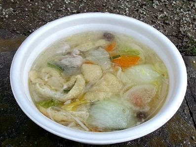
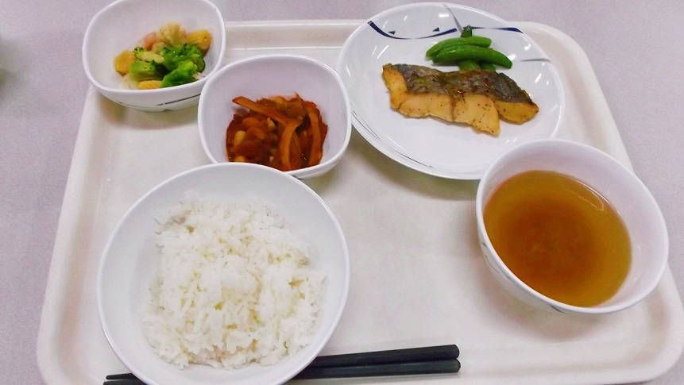
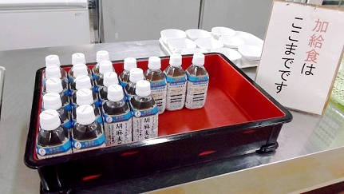
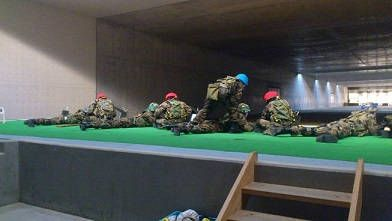
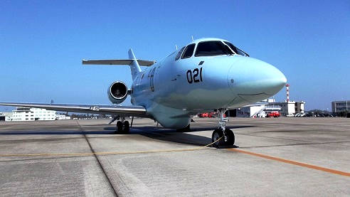
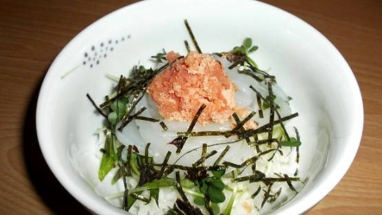

| 自衛隊のごはん 航空自衛隊 芦屋基地編 ほんとうの自衛隊のごはん | |
| 廣川ヒロト | |
| denmei shobou (2014) | |
自衛隊のごはん 航空自衛隊 芦屋基地編
はじめに
本書は『ほんとうの自衛隊のごはん 目達原駐屯地編』の続編に当たりますが、続き物ではないため未読でも差し支えありません。
航空自衛隊の芦屋基地の隊員食堂で三日間、朝昼晩にわたって食事をしてきました。本書のメインは、自衛官がふだん食べているごはんの紹介です。
今回は、食事以外の点も色々と見学・取材をさせていただきました。
芦屋基地の所在部隊は教育部隊を中心としています。
第３術科学校は航空自衛隊の、主に後方職種の隊員に対する、給養（調理員）、補給、総務、整備、警備などの課程教育を実施しています。
また、第１３飛行教育団はジェット練習機（Ｔ４）による飛行教育訓練を行っており、パイロットの養成校としても有名です。
基地司令は、第３術科学校長が兼務で、原哲之空将補です(二〇一四年一月現在)。
（画像：第３術科学校部隊マーク）
航空自衛隊 芦屋基地の所在部隊
第３術科学校
第１３飛行教育団
第２高射群整備補給隊
第２高射群第５高射隊
第２高射群第６高射隊
芦屋救難隊
芦屋管制隊
芦屋気象隊
芦屋地方警務隊
など
免責
本書は取材を元に執筆されていますが、内容につきましては事実を保証するものではありません。
なお、使用する電子書籍端末によってレイアウトに差異が生じます。ご了承ください。
プロローグ――航空自衛隊・芦屋基地へ
《二〇一三年秋口》
航空自衛隊の芦屋基地は、九州の北部、ＪＲ遠賀川駅からタクシーで十五分ほどの距離、響灘に面した海岸沿いに立地している。
基地の正門は主要道路から外れた、少し奥まった場所にあり、ひっそりとした佇まいでどこか遠慮がちな雰囲気が漂う。
（画像：芦屋基地、正門前にて撮影）
時刻は十四時半過ぎ。
ゲートは開かれているが、可動式の車止めが二重に設置されており、車両が基地内にまっすぐには進入できない仕組みになっていた。
陸上自衛隊の駐屯地は、場所にもよるが、基本的には課業時間の前後（六～十八時）は、ゲートは開きっぱなしで、車止めなどの障害は見当たらない。
一般的に空自は陸自よりもオープンといわれるが、その空自の管轄である芦屋基地のゲートは、一見して厳重、との印象だった。
警衛所の受付に赴くと、担当者が「どういったご用件でしょうか」と慇懃な態度で接してきた。
受付の後ろには、戦闘服姿の自衛官が立ち、正門のほうに顔を向けている。背後の自衛官が腰に締めている弾帯にちらっと目をやりつつ「渉外室の中村様に面会に来ました」と伝えた。
ここで話は一〇日ほどさかのぼる――。
陸上自衛隊の目達原駐屯地に取材を行い自衛隊の食事をテーマに電子書籍を書いたのは良いものの、次作をどうするべきか悩んでいた。
目達原以外の駐屯地に取材を申し込んで、また同じように隊員食堂で食事をさせていただいても、内容は似たものになるのではないか。
執筆する側の視点に立てば、フォーマットはできあがっているわけだから、作品を書くのは楽に違いない。しかし、読者は内容の似た本を読みたいとは思わないだろう。
いっそ、缶飯などの非常食、いわゆるミリメシをテーマにするべきか。いや、それはすでに出尽くしている感がある。二番煎じに面白味はない。
ふと私は、航空自衛隊の元幹部自衛官である数多久遠氏に前作『ほんとうの自衛隊のごはん 目達原駐屯地編』（※以下『目達原編』）を献本した際に返ってきた言葉を思い出した。
「この調子で空自や海自にも取材を申し込んだらどうだろう。実績があれば、話は通りやすいと思う」
なるほど。陸にこだわる必要はないのか。
たとえば食事については三自衛隊の中では、海自が美味しいとの評判をきいた覚えがある。海自のウエブサイトには詳細なレシピが掲載されているし、熱のいれかたが違う。
ただ、空自の食事は美味しいとも不味いとも聞いた記憶がなかった。
俗に「陸自はおにぎりを、海自はカレーを、空自はハンバーガーを」といわれる。
空自がハンバーガーなのは、旧日本軍に前身を持たない組織(アメリカ空軍との繋がりが強い)、という点も関係していると思う。
自衛隊は陸海空で、それぞれ異なる特色を持つ。旧海軍と旧陸軍の仲が良くなかった話は有名だ。現在の自衛隊では、取り立ててそういう話は聞いた経験はなかった。そもそも、接触する機会も少ない。もちろん、陸の部隊が空の基地に入る場合もあるし、その逆もまたしかり。海が陸の施設を使う場合もあるだろう。
とはいっても、ことさら交流が奨励されている訳ではないし、主な活動領域がそれぞれ異なるため、普段はお互いの存在を意識する機会もない。
色々と調べるうちに、航空自衛隊の芦屋基地は、毎年十一月の半ばに航空祭を実施していると知った。
航空祭とは、自衛隊への理解を深めてもらうため基地を一般開放し、戦闘機や輸送機を展示したりする航空自衛隊のお祭りで、最大の目玉は、曲技飛行隊『ブルーインパルス』による展示飛行だろう。
なんと同基地には調理の教育課程があるという。取材を申し込むならここしかない。私は早速、企画書と、前作の入ったデータＣＤを用意し、芦屋基地の航空祭に出掛けた。
当日はあいにくの小雨模様だったが、人出は多く、出店なども盛況を極めている。
基地の広報担当者とコンタクトをとろうと試みたが、基地内は見物客でまっすぐに歩けないほどの混雑ぶりだ。
（画像：芦屋基地航空祭。滑走路手前にて撮影）
出店の片隅に、福岡地方協力本部の芦屋地域事務所ブースがあるのが目にとまった。
地方協力本部、略して『地本』は自衛隊の総合窓口で、自衛官募集、及び退職自衛官の再就職援護を主な業務としており、広報関係もその中に含まれる。
福岡地本の広報班長の田村さんには前作の時はお世話になっており、時々メールのやりとりなどで交流があった。
芦屋地域事務所の石井所長に事情を説明し、企画書をお見せした。
ちなみに石井所長は陸上自衛官で、階級は三佐となる。
「基地の広報担当のかたを紹介していただけないでしょうか」と伝えると、石井所長は快く応じてくれブースをあとにした。
待つこと一〇分ほど。
戻ってきた石井所長は申し訳なさそうに「広報の責任者は中村三佐というんですが、今日は色々と忙しいらしく、捕まりそうにないですね」とあたりの人混みを見やりながら私に告げた。
石井所長は「企画書は中村三佐に渡しておきますので、後日、廣川さんから基地に連絡してくれませんか」とのことだった。
私が芦屋基地の渉外室に電話を掛けたのは航空祭から三日後のこと。
昼過ぎに電話を掛けると、広報室のかたは「中村室長はいま、見学者の応対をしており不在です。十六時ぐらいには戻ってくるのですが......」
「では、のちほど電話を掛けます」
十六時ちょうどに再度電話を入れた。
「現在、中村は会議中です」
あれ、これはもしかして......避けられているのか。私は少し落ち込んだ。
これがデートの誘いなら、いったん撤退して策を練るところだ。
三度目の正直......と呟きながら、十七時前に電話をすると、ようやく渉外室長の中村三佐に繋がった。
（画像：渉外室長 中村豊三等空佐）
「どちら様ですか？」
「廣川と申します。福岡地本の芦屋地域事務所の所長である石井様に......」と説明しながら、中村三佐の返答が脳裏をよぎった。
「えー。あー。うちはそういうのは無理ですね」と、すげなく断られたらどうしよう。
ま、別に断られたところで命までとられる訳ではない......と自分を鼓舞しながら説明を終えると中村三佐は「あ、企画書。はいはい。受け取ってますよ。こちらから電話をしようかと思っていたところです」予想外に好意的な声が受話器を通して返ってきた。「目達原編のデータもいただいています。まだ読んでませんが」
「詳しいことは、私が芦屋基地に出向いて話をしたほうがいいかと思っているのですが......」
「そうですね。それが一番良いですね。では、いつにしましょうか」
歯車が動き出した。
《要望は遠慮なく。全部こちらで調整します》
私が芦屋基地に出向いたのは、電話の翌日だった。
警衛所で「渉外室の中村様に面会に来ました」と伝える。「取材の件で打ち合わせをすることになっていまして......」
「そうですか。では、こちらの用紙に記入をお願いします」面会受付書なる用紙を渡された。名前や、面会理由などを書き込む。
（画像：第３術科学校隊舎玄関）
手続きを済ませ、警衛所を出、第３術科学校の隊舎へと足を向けた。
隊舎二階にある総務課渉外室に到着したのは、十四時四〇分過ぎ。
私が渉外室に入ると、奥に立っていた五十がらみの長身の人物がこちらを振り返った。「廣川さんですね？」
「はい。廣川です」
中村三佐はにこやかな笑顔をたたえて私に近づいてきた。手には、印刷された『目達原編』があった。
中村三佐は原稿を少し掲げて「読ませていただきました。なかなか専門的で面白いと思います」
「ありがとうございます」
「今日は、うちのスタッフの梶原と、あとで、調理の先任の鎌田が来ますので、彼らを交えて打ち合わせをしましょう。どうぞこちらの部屋に」
奥の小部屋へと案内された。
中村三佐はソファに腰を下ろすなり印刷された『目達原編』をパラパラと捲った。
「読んだ感想ですが、ずいぶんと細部まで企画されて書かれているんだな、と思いました。期待しようかなと思って」
案に相違した好反応に、私は動揺してしまった。「あ、ありがとうございます」
部屋の扉が開き、二人の人物が部屋に入ってきた。中村三佐が「うちの広報係の梶原曹長と、給養の先任の鎌田一曹です」と紹介する。
梶原曹長は一枚の用紙を私に差し出した。
「取材申込書です」
梶原曹長と鎌田一曹は、中村三佐の両隣に腰を下ろした。名刺交換を行う。
中村三佐が「取材の許可については基地司令次第ですが一応、申込書をお渡ししておきます。今日は給養の責任者である坂口二尉が不在で、取材の期日は決めることはできませんが、司令の許可が出たら、期日はこちらで調整して廣川さんに連絡します。取材申込書に必要事項を記入してうちまでファックスしてください」
「......わかりました」
スムーズな滑り出しに、狐につままれている気分を抱いた。
前作の『目達原編』の時は、駐屯地の広報担当者に話を聞いてもらうのも一苦労で、取材の許可もなかなか下りなかった。
中村三佐は口を開いた。「今日はせっかく来ていただいたので、取材の許可が出る、という前提でお話をさせていただこうかと考えています。このミーティングの出来次第で、司令の許可が出るか否かも、おおかた決まるんじゃないかと思います」
「......了解しました」
「今後、どのように取材を進めるのか、現場との調整なども含めて色々と話をしましょうか。廣川さんとしては、朝昼晩の食事を何日間かぶっ通しでなのか、それとも一日とか二日の単位で、それを何度かに分けるのか......」
「期間は連続して三日間です。三日間で、昼と夜」
余談だが、三日間は、試行錯誤の結果に導き出した数字だ。『目達原編』の時の希望は当初、一週間だったのだが、自衛隊側の担当者が「期間が長すぎる」と難色を示した。自衛隊側は取材時に人員を出さなければならず、取材期間中は一名が欠員状態になってしまう。
かといって一日では本を書くことは出来ない。だから間をとって三日間という数字に落ち着いたのだった。
「あれ、朝食は食べないんですか？ 基地では、朝の六時過ぎから朝食を食べることが出来ますが」
「うーん、面倒ではないかと思いまして......。いや、私が、ではなく。私が一人で隊員食堂に行って一人で食べる、という訳にはいかないと思いますので。つまり、同行していただくかたにとって、朝の六時からはご迷惑ではないかと......」
中村三佐は、何を言ってるんだコイツは、という白けた表情で私を一瞥した。梶原曹長をちらりと見やり、その背中をバンと叩く。梶原曹長はビクッと肩を震わせた。
「いやいや、この梶原が同行しますよ。朝の四時でも五時でも何時でも」当然だ、と言わんばかりの表情で言ってのける。
梶原曹長は、両手で両膝を掴み、背筋を伸ばし、悲壮とも思える顔つきで大きく頷いた。「全く問題ありません」少しだけ、森進一っぽかった。
「そ、そうですか？ 大変じゃないでしょうか？」
「いえ。朝が早いのは慣れてますから......」思い詰めた顔つきで梶原曹長は述べた。
中村三佐は「あの、こちらの都合は気にしないでいいですよ。それが彼（梶原曹長）の仕事ですから」中村三佐は実際に同行する訳ではないせいか、気楽な調子で言った。
梶原曹長は幾分青ざめたかにも見える顔つきで「送り迎えというか......私がホテルまで出向いて、そのまま基地にお連れして、というふうに考えているんですが」
中村三佐は頷く。「要望は遠慮なく仰ってください。全部こちらで調整しますから」
私はそれを聞いて卒倒しそうになった。なんだこの陸自との違いは......。
ここで一つ、釈明を入れたい。
『目達原編』では取材の許可自体もなかなか下りず、取材自体も、隊員食堂と厚生センター、それから広報資料館だけ、という少し寂しいものではあったが、それは私が望んだ結果である。
とりあえず最初の実績が欲しい。最低限、隊員食堂で食事させていただければ......と交渉したのは、最初からあまりに高い球を投げるべきではない、と考えたからだ。
目達原駐屯地の広報室長の加茂三佐は私の話を真摯に聞いてくれ、駐屯地司令の川﨑朗陸将補に掛け合ってくれた。
恐らく、私が知らないところで、色々と苦労もあったと思う。なにぶん、前例のない話であり、福岡駐屯地の広報室には、隊員食堂が改装中（これは事実）という理由で断られ、私が現役の頃に勤務していた飯塚駐屯地に至っては、子供キャンプ支援で忙しいから取材は不可、と拒絶された。
目達原駐屯地の取材が実現したのは川﨑朗陸将補と、加茂三佐のおかげなのは間違いない。また、忘れてならないのは、実際の取材に同行していただいた後藤一尉の存在だ。
取材のＯＫが出るまでは、正直にいうと、地本の事務官や駐屯地の隊員から怪訝な目で見られたし、不審がられたのは確かである。しかしいったん、駐屯地司令の許可が下りたあとは、扱いが天と地ほども違う、とは言い過ぎだが、ゲストとしての待遇を受けた。
後藤一尉が糧食班や、委託喫茶店のオーナーに話を付けてくれたおかげで、取材期間中は下へも置かぬ扱いであった。
加えて、本を書くための取材、とは言ったものの、陸自側からしてみれば、当時の私は、海のものとも山のものともつかぬ存在だったはずだ（現在も同じかも知れないが）。
いま振り返ってみると、よく取材の許可が下りたな、とも思う。適当な理由をつけて門前払いすることも可能だっただろう。
陸自と空自の差異、または担当者の考え方の違い、という点も関係しているのは否定はできないものの、決定的に異なるのは『目達原編』の存在に違いない。
芦屋編がもし一作目だったら......。中村三佐の「要望は遠慮なく仰ってください。全部こちらで調整しますから」という言葉を聞けたかどうか、私は自信が持てない。
「芦屋基地には給養の学校があるんですよ」中村三佐は言った。「私としては、その学校にもスポットを当てて、調理実習の風景なども盛り込んでいただけたら、と考えています」
「はい。とても興味深い点かと思います」
中村三佐によれば、芦屋基地の第３術科学校では給養のほかにも補給、会計、総務、施設（営繕）、車両整備、警備など、航空自衛隊の後方業務に関する教育を行っている、とのことだった。
「あと、厚生センターの委託食堂（隊員食堂とは違う、民間経営の有料店舗）なども取材したいと考えているんですが」
梶原曹長がすかさず「基地内の委託食堂はエスカルゴという名前です」と説明を入れる。「取材の件は調整します」
中村三佐が「では、お帰りになるときに厚生センターに案内しましょうか」と述べ、システム手帳をのぞき込む鎌田一曹に向き直った。「あとは、インタビューが給食の坂口班長と栄養士、三科の教官――」
中村三佐は表情を引き締めると私に向き直った。「航空自衛隊として出版に協力するからには、表紙はブルーインパルスの機体をバーンと持ってきて欲しいですね。写真のデータはお渡ししますから、その中から選んでいただいて」
「室長」梶原曹長が割って入る。「芦屋はブルーインパルスではなくレッド・ドルフィンですよ」
「ああ、そうか。レッド・ドルフィンか」
「レッド・ドルフィンというのは何ですか？」私は尋ねた。
梶原曹長が説明する。「芦屋は１３飛行教育団というパイロットの養成学校もありまして、使用機体のＴ４は丸みを帯びたフォルムだから空自では『ドルフィン』という愛称で呼ばれています。それで、芦屋の『ドルフィン』は上空での視認性を向上させるために、白地に赤のラインが入る、独自の塗装を施しているんですよ」
中村三佐が頷く。「ブルーインパルスの機体と同じだけど、カラーリングが違うんですよ。操縦するのがパイロットの卵たちなので、Ｆ15みたいなグレーの塗装だと、視認性が落ちて安全性に問題が出ますから」
「なるほど」
中村三佐が言葉を続ける。「本の中には、芦屋は３術校の調理の学校もあって、という部分も絡めて書いていただいて。あとは芦屋基地をＰＲしていただいて、基地の見学も出来ますよ、みたいなこともね」
「毎年秋に航空祭を実施して基地を一般開放しています、という説明も盛り込みたいと考えています」
（注 芦屋基地航空祭、および基地見学については巻末の『付記一 芦屋基地航空祭』を参照ください）
うんうん、と中村三佐は我が意を得たり、という感じで頷いた。「そのほか、厚生センターのエスカルゴ（委託食堂）や基地内のコンビニで売ってるグッズなども取材して、ここでしか買えないボールペン！ とか」
梶原曹長が「ここでしか買えない石けん！ とか」合いの手を入れる。
「カカカカッ」と中村三佐は笑うと、デーンとソファの背もたれに背中を預け、足を組んだ。「こんな感じの持って行き方だな！」
「あと、空自ならではという意味で、警備犬を見せていただけないかと（※陸自には軍用犬は存在しない。空自と海自は基地警備のために軍用犬を運用している）」
梶原曹長は即答した。「大丈夫です」
「ありがとうございます。――具体的な取材の日付ですが、もう年末も近いですし、年が明けてからになるのかな、とは思うのですけど......」
鎌田一曹が頷く。「そうですね。お正月休みが明けてからになりますね。あと、厨房は菌検査をしないと入れませんが......」
「厨房は遠目から写真を撮らせていただければ......」
「では、そのように調整しましょうか」
中村三佐は首肯した。「今回は食堂に関しては、厨房の写真は遠くからで、あとは廣川さんが食べてのレポートと、それから芦屋基地のＰＲを絡めて......。最後に、書籍に盛り込むかどうかは別として、うちのボスとも会ってインタビューをね」
っ！
私は思わず中村三佐の顔を見返した。まさか基地司令と面談が出来るとは......。
「原哲之空将補ですね。それはもうインタビューをさせていただければ大変光栄に思います」
「ボスのスケジュール次第だけど、時間は、十五分ぐらいかな。後日、調整しましょう」
中村三佐は『目達原編』をぴしゃりと手で叩いた。「あのね、航空自衛隊だからという訳じゃないけど、陸には負けないよ。芦屋基地の広報担当としてはね」
私はここはひとつ持ち上げるべきか、と考えた。「食事の美味しさは、陸よりは空が上、とは言われてますよね。海自は少し特別みたいですが......」
「海自は艦艇が美味しいらしいですね。――あと、どうですか。取材の詳細な要望とか、インタビューの項目とか、廣川さんで準備していただいて、司令の取材許可が出て、日にちが決まれば実際に動き出す、という段取りで」
「はい。よろしくお願いします」
「では、これから基地をざっとご案内して、そのあと厚生センターに寄って、ゲートまでお送りします」
滑走路や管制塔、及び屋内射場を遠目から見学させていただき、車は厚生センターの駐車場に止まった。
委託食堂のエスカルゴに赴いて、中村三佐がオーナーである永野登喜夫さん夫婦に話をしてくれた。
芦屋基地の委託食堂は家庭的な雰囲気が漂っている。
壁に並ぶメニューをざっと見る。第一印象としては、ボリュームを重視した、男性向けの食堂、とのイメージを持った。
その場ではごく簡単に話をさせていただいて、私は帰途についた。
《炊き出しの豚汁を食す》
インタビュー項目などを芦屋基地の渉外室宛てにメールで送ってから数日後、中村三佐から私の携帯電話に連絡があった。
「基地司令の取材の許可が出ましたので、日程についても現場と調整しました。年明けの一月二一日から三日間でどうでしょう？」
私はスケジュールを確認して「はい。問題ありません」と応じた。
中村三佐はふと思いついた感じで口を開いた。
「食事繋がりですが一月の初めに水巻町で、遠賀郡の消防隊の出初式があります。芦屋基地から炊事車が出て、炊き出しをするんですよ。廣川さん来てみませんか？」
「面白そうですね。行きます」
ということで年が明けた一月二週目の日曜日の朝、私は遠賀郡の水巻中学校に足を向けた。
午前八時、すでにグラウンドの片隅には炊事車がセッティングされ、デジタル迷彩服姿の空自の隊員たちが調理の準備を始めている。
中村三佐と梶原曹長を見つけ「おはようございます」と挨拶をした。
「廣川さん、おはようございます。いやー、寒いですね」中村三佐は白い息を吐きながら両手をもみ合わせた。
私は炊事車を振り返った。「もう豚汁はできあがっているんですか」
「いや」中村三佐は腕時計を見た。「今はお湯を沸かしているところです。配食は一〇時からなのでまだ余裕はありますね」
私は炊事車に目を向けた。
（画像：炊事車 製造年月日は二〇一三年二月）
航空自衛隊の炊事車はトラックの荷台が調理室になっているタイプだと思っていたが、平成二四年度より配備されている新型は牽引型で、ベースは陸自と同じタイプとのこと。
だが陸と空では名称が違う。陸自では「野外炊具１号」
空自では「トレーラー１ｔ炊事車」
細部も若干ながら異なっている。
ご飯だけならおよそ六〇〇人分を炊くことが出来る。主食と副菜を同時に調理する場合なら二〇〇名分が可能。
スペック上では、炊飯、汁物、焼き、煮、炒、揚げ物が可能だが、実際は焼き物は難しく（焦げやすいため）、炊飯、煮物、汁物がメインになる。
芸能事務所の石原プロモーションが、これと同等の炊事機を所有しているらしい。
やがてグラウンド中央部に消防隊員が整列し、出初式が始まった。
国旗掲揚のあと、各消防隊員の行進が続いた。
（画像：炊事車での炊き出し）
炊事車での調理が粛々と進んでいく。
調理の責任者は、第２高射群第５高射隊所属の久保田二尉で、実際に調理を担当したのは瀧本二曹。調理補助で空士が四名ほど。
調理補助の空士が行ったり来たりと甲斐甲斐しい。
第２高射群はペトリオットを装備しており、基地の外に部隊を展開する場合に備え炊事車を有している。
高射隊や渉外室の自衛官のほか、広報班長の小山事務官も来ていた。
消防隊の行進を横目に、梶原曹長が声を掛けてきた。
「あ、そうそう廣川さん。取材初日に沖縄へ出張することになりまして、取材に同行出来なくなりました」
「そうなんですか」
梶原曹長は残念気味に頷く。「廣川さんの取材期間中に帰ってきますので、最後の一日は同行できそうです。初日と二日目は室長が同行しますので」
「了解しました」
取材当日の午前六時過ぎに私が芦屋基地の警衛所に赴き、そこで中村三佐と落ち合う、という段取りとなった。
ホテルまで迎えに来てもらうのは心苦しかったので都合が良い。ちなみにホテルから芦屋基地の正門までは歩いて五分ほどである。
九時半頃、豚汁ができあがった。
中村三佐が「廣川さん、豚汁食べましょう」と声を掛けてきた。
できあがった豚汁は保温バッカンに移され、配食は地元の婦人会の女性たちが担当した。
豚汁を受け取って、中村三佐と一緒に片隅のベンチへと向かう。
（画像：できたばかりの豚汁）
材料は――
豚バラ、白菜、ニンジン、長ネギ、厚揚げ、薄揚げ、こんにゃく、ジャガイモ、えのき、白ごまなど。
味付けは――
顆粒かつお出汁、合わせ味噌、ごま油。濃口醤油を少し。
まずはスープを口に運ぶ。
熱々だが、やけどするほどではない。ちょうど良い温度といえる。
野菜と味噌、それから豚バラの脂の旨味がしみ出していて、そこにゴマの風味が加わり、絡み合った美味さを醸し出している。
具材の白菜やニンジンなどの火の通り具合も絶妙だ。できあがったばかり、という点が大きいだろう。
味噌は薄目だが、様々な材料の旨味がブレンドされ、ごま油と非常によくマッチしていた。ごま油を使うとクドい感じになるのではと思ったが、程よい香ばしさである。
時折、若い主婦さんらが、配食の婦人会のかたにレシピなどを聞きに来ていた。確かにこれは家でも作ってみたくなる味だろう。
ちなみに材料と燃料は出初式の主催者である遠賀郡が出しており、芦屋基地は機材と人員を提供している。
「ところで、芦屋のあとは海自ですか？」ふーふーと豚汁を冷ましながら、中村三佐が聞く。
私は頷いた。「その予定ですね。年末に、福岡市内で佐世保地方隊のクリスマスコンサートがありまして、佐世保基地の広報担当者と名刺交換は済ませました。芦屋編を刊行したら正式に取材を申し込むので、そのときはよろしくお願いします、という感じで」
「なるほど」
私は担当者の名刺を差し出した。
「○○さんというかたで、確か三佐ですね」
中村三佐は、名刺に視線を落とした。
「ほう、準備がいいですね」
「自分は海自のことはよく分からないんですが......。これは本で読んだ知識ですけど、旧軍の伝統を受け継いでいるというか、士官と曹士の関係が厳格というか」
中村三佐は頷いた。「私も海自の何人かと付き合いはあるんですが、そのようですね」
「海自は階級差がはっきりとしてて、空自はそれほどでもないとか、これも本で読んだ知識なんですが、どうなのでしょうか？」
中村三佐は一瞬間を置いて「そんなことないですよ」と答えた。首を傾げて「けど、ケースバイケースかも知れませんね。話は変わりますが、陸はとにかく用意周到ですね。何か陸自と合同でやるときも、レジュメでも陸の場合は空の倍になったりしますから」
「そこら辺の違いというのも面白いですよね。陸が用意周到というのも分かりますし、海自は、旧海軍の伝統を受け継いで、それを隠そうとしてませんし。けど陸は旧軍とは違うんだ、一緒にして欲しくない、という節がありますよね。ま、その、旧陸軍の評判が悪いからでしょうけど......。陸もある程度は旧軍の精神とか、しきたりとかを受け継いでいるのは確かだと思います。隊旗の扱いなどは厳格ですし」
帰り際、中村三佐が小冊子を私に差し出した。
「参考になるか分かりませんが、事前情報ということで読まれたらいかがでしょう」
タイトルは『芦屋飛行場物語』
著者は月輪時祺氏で、第二〇代の第３術科学校長兼第十七代の芦屋基地司令である。
「ありがとうございます。読ませていただきます」
《芦屋飛行場物語を読む》
（画像：『芦屋飛行場物語』）
家に帰り早速、小冊子を開いてみる。
そもそもの芦屋基地の始まりは昭和一四年、満州事変やノモンハン事件において航空機の重要性に気づいた日本陸軍が、航空機充備計画を定めたことに起因する。
それは、現有の五四個中隊を五年間で三倍の一六二個中隊に増やす計画であった。
飛行場の新設に芦屋の三里松原が選ばれたのは、本土防空の要とされた関門海峡を含み、また小倉や八幡に近く、要撃に最適の位置にあったためである。
昭和一四年十一月十三日に芦屋飛行場起工式が行われた。当時の三里松原は江戸初期、筑前に入封した黒田長政の政策で、明暦から延宝（一六五五～一六八〇年）にかけて植樹された防風林が広がっており、ほとんどは国有地だった。
飛行場の完成は昭和十七年の春で、太平洋戦争まっただ中の頃。先遣隊として通信を任務とする部隊が入場、五月末には飛行機、発動機、自動車などの整備や修理を任務とする大刀洗陸軍航空廠の芦屋分廠が完成、十二月には九七式戦闘機が配備された。
程なく九七式戦闘機は一式戦（隼）へと換装され、基地の拡張工事も実施、一五〇〇メートル級滑走路を備えた、九州北部最大の陸軍飛行場へと変貌を遂げた。
太平洋戦争敗戦後、同基地は米軍に接収され、昭和二〇年秋にはＰ51ムスタング戦闘機を主力とする航空団が移駐した。
昭和二四年前後は、アメリカ軍の救難隊、輸送機部隊の中継地として使用されたが、昭和二五年に朝鮮戦争が勃発すると、にわかに慌ただしさを増した。
板付、ジョンソン基地（入間）などから戦闘機や爆撃機が集められ、苦闘中の韓国陸軍を支援するため芦屋から出撃、南下する北朝鮮軍に対し空からの一撃を加えた。
空襲は連日実施され、芦屋基地は燃料、弾薬の補給、及び再出発準備のため、文字通りの戦場のような忙しさに包まれる事態となる。
一万人にも及ぶ日本人従業員が採用され、航空機整備、車両整備、補給、警備と、あらゆる作業に従事した。
当初、戦況は北朝鮮有利に進んだ。アメリカ軍の支援を受けた韓国軍が盛り返し、そこに中国共産党軍が北朝鮮側として参戦、状況は予断を許さないものとなる。
昭和二六年七月に休戦会議が始まり、二年後の昭和二八年七月には板門店にて休戦協定が調印、ひとまず朝鮮戦争は休戦となり、芦屋基地に駐屯していた部隊は戦時勤務を解除された。
昭和三五年三月になると基地撤退計画が発表され、芦屋に残っていた二個飛行隊は沖縄と立川にそれぞれ移駐を開始、同年六月をもって完了した。
同年の十二月一日、芦屋基地は正式に航空自衛隊に移管された。
以上が芦屋基地のバックグラウンドとなる。
《取材当日。いよいよ、朝食を食べるため芦屋基地へと向かう》
光陰矢のごとし。
インタビュー項目や、取材計画の細部などを渉外室とやりとりしているうちに日数が過ぎ、ときに二〇一四年一月二〇日。
私が芦屋基地の近くにある『ビジネスホテル金端』にチェックインしたのは午後七時頃のこと。
一階の食堂で軽い夕食を済ませ、部屋でシャワーを浴びる。取材計画の確認などをしていると、すでに零時近くになっていた。目覚まし時計をセットし蒲団に潜り込む。
起床は午前五時半。
洗顔を済ませ、服装を整え、六時過ぎに『ビジネスホテル金端』の部屋をあとにした。
腹をさする。昨夜の夕方より固形物は口にしていない。従って空腹だ。朝ご飯を食べなければならない。
まだ空は暗かった。私はひとけのない通りをトボトボと歩いて、航空自衛隊・芦屋基地の正門へと歩いていった。
食 前 訓
（画像：幹部食堂の入口に飾ってある額縁）
戦う武人よ 歯を見せるな
光る目で 相手を威圧せよ
くつろぐ武人よ 肩の力を抜きたまえ
いくさに備えて 腹ごしらえをせよ
強い武人よ 優しい心を失うな
友の手料理に 舌鼓を打ちたまえ
「うまい」とつぶやいて
味方をねぎらいたまえ
第一章 芦屋基地のごはん
《隊員食堂と幹部食堂のメニューは同じ？》
正門前に到着する。出勤の自衛官が運転すると思われる自家用車がほぼひっきりなしに基地の中に吸い込まれていく。
警衛所の受付近くには、渉外室長の中村三佐の自家用車が停車していた。
挨拶を交わし、助手席に乗り込む。
車を発進させた中村三佐が「いよいよ始まりましたね」と声を掛けてきた。
「はい。三日間、よろしくお願いします」
「いえいえこちらこそ。幹部食堂でいいですかね？」
「はい」異存はなかった。
自衛隊の基地、及び駐屯地の食堂は二種類あって、曹士が喫食する隊員食堂（もしくは曹士食堂、大食堂とも）と、尉官以上の自衛官が喫食する幹部食堂がある。
メニューは同一だが、幹部食堂は喫食人数が少ないので、隊員食堂に比べると待ち時間が短い。
ちなみに私は芦屋基地で三日間の朝昼晩、合計九食の食事をいただいたが、隊員食堂では一度しか食べなかった。幹部食堂での喫食を望んだわけではなく、同行の中村三佐が幹部自衛官なので、自然と幹部食堂になってしまった。
《初日の朝食～ボリューム満点》
幹部食堂の入口で手を洗い、トレイと箸を持ち、空の食器類を載せ、生卵とちびろく納豆を取る。
ご飯ジャーからご飯をよそい、味噌汁をお玉で碗に注ぎ、メインのオカズを皿に取り分ける。分量は自分で決めることが可能。隊員食堂ではご飯の量は加減できるが、おかずや汁物は配膳された皿を取っていく形式となる。幹部食堂がセルフなのは、配食の人員が足りないからだろう。
席につく。
（画像：初日の朝食）
内容は次の通り。
――――――――
・白ご飯
・油揚げの味噌汁
・レバー煮
・胡麻チキンサラダ
・ポテトベーコン
・生卵
・ちびろく納豆
・牛乳（一八〇ｍｌ）
――――――――
一〇〇一キロカロリー
おかずが三品に、油揚げの味噌汁と生卵や納豆までついており「ずいぶんと豪華」というのが第一印象。
美味い、と書くのはあまりに芸がなさすぎるが、あえて。美味い！
三日間の朝食の中では、初日がボリュームやバリエーションなども含めて最上だった（あくまで朝食の中では）。
味噌汁は千切りの油揚げがなみなみと入って、これ一つだけでも十分なおかずになる。
レバーは甘辛い煮付けで、ご飯が進む。
胡麻チキンサラダは、サラダというほど野菜は多くは含まれていない。ボイルしたささみを小さく裂いて、タマネギスライスを加え、ゴマドレッシングを和えたもの。
ポテトベーコンは、ベーコンは申し訳程度でマッシュポテトに近い。
画像では少なめだが、セルフ配食なので大盛りにすることもできる。食べ終わったあとに、もう少し多めにとっておけばよかったと後悔した。
（画像：卵かけご飯）
おかずが盛りだくさんなので生卵は必要ないのだが、せっかくだから卵かけご飯にした。
テーブルの上にメニュー表があったので、食べながら何気なく眺める。
お、と思ったのが一点。
陸自の場合、土日や祝日の朝食はたいていパン食（菓子パン二個と飲み物）だが、芦屋基地は土日でも調理した温食を出している。
土日の朝食の一例を抜粋する。
『土曜』
白米、納豆、生卵、イカチーズバーグ、カボチャサラダ、厚揚げ味噌汁、牛乳、刻みレタス。これで八六八キロカロリー。
『日曜日』
白米、焼き豆腐味噌汁、ささみ竜田揚げ、インゲンマイタケごま和え、ひじき煮、牛乳。
これで九一三キロカロリー。
私は中村室長に尋ねた。
「芦屋基地は土日もちゃんとした朝食を作っているんですね。航空自衛隊はどこも同じですか？」
「芦屋のような大きな基地と、レーダーサイトのような小さいところでは若干違ったりしますが、だいたいは温食ですね。朝はやっぱり味噌汁がいい、という隊員が多いみたいですよ。私も朝は、ごはんと味噌汁がいいですね」
航空自衛隊は、航空機を運用する特性上、勤務が不規則になりがちな部署もあるので、その点も関係しているのかも知れない。
《初日のお昼ご飯～副菜が充実》
続いて、同日の昼食の紹介。
（画像：初日の昼食）
内容は次の通り。
――――――――
・白ご飯
・つぼ鯛みりん焼き
・なめこ汁
・牛すじと野菜の煮込み
・とろろ
・きんかん
――――――――
九三四キロカロリー
自衛隊のランチは、揚げ物などのボリュームを重視したものが多いイメージだが、この日は和食系のあっさりとした献立。
副菜が充実しているな、というのが第一印象。
（画像：つぼ鯛みりん焼き）
メインは焼き魚。つぼ鯛の脂と、みりんのこってりとした甘さが絡み合ってご飯のオカズにちょうど良い。
牛すじと野菜の煮込みも甘辛い味付けである。
「とろろ」と「なめこ汁」は、若干かぶっているが、日本的な組み合わせといえる。
若い隊員からすれば若干、物足りなさも感じるかもしれない。が、私は美味しくいただいた。
同席の隊員のみなさんに料理についての話を聞かせていただいたが、それは次章で紹介する。
《初日の夕ご飯～餃子入りのキムチ鍋》
十七時に課業終了となり、夕食を食べるため中村室長と共に幹部食堂へと向かった。
 （画像：初日の夕食）
（画像：初日の夕食）
内容は次の通り。
――――――――
・白ご飯
・キムチ餃子鍋
・コンニャク寒天タコサラダ
――――――――
九三三キロカロリー
キムチ餃子鍋は、コチジャン系だが、それほど辛くない。
具は、ニラ、白菜、白ネギ、木綿豆腐など。
主役は、中身のたっぷりと詰まった餃子で、三個入っている。
お椀に入っているので厳密には〝鍋〟とは呼べない。ここら辺は大量調理の限界といえるかも知れない。
サラダの味付けは、和風ドレッシングふう。
昼間と比べると少し副菜が寂しい。
《早朝、警備教育課程の隊員たちに遭遇》
二日目の午前六時過ぎ、宿を出ると小雪が舞っていた。地面が所々凍っているため、滑らないよう注意しながら芦屋基地に向かって歩く。
昨日と同じく警衛所には中村室長の自家用車が停車していた。助手席に乗り込み、おはようございます、と挨拶する。
幹部食堂へと向かう。
途中、ヘッドライドに照らされ、戦闘服姿の集団が浮かび上がった。手に手に六四式小銃を持ち、隊列を組んで駆け足をしている。
「あれは警備課程の学生です。こんな朝っぱらからご苦労さんですね」
「警備課程？」
陸上自衛隊には存在しない職種だ。
「芦屋には、基地を警備する職種の教育隊があるんですよ。陸上自衛隊でいえば普通科に近いかな。３術校の第２教育部７科が教育を担当しています」
「戦闘訓練とかするんですか」
中村室長は頷いた。「戦闘訓練もしますね。あと射撃や、夜間行進とか。警備課程の学生が寝泊まりする隊舎も少し離れたところにぽつんとありましてね。なぜ離れた場所に隊舎があるかというと、普通の隊員と同じにすると、どうしても精神的に弱くなってしまうんですよね。お前たちは特別なんだ、ということをたたき込む必要がある訳ですよ」
「なかなか厳しそうですね」
ため息交じりに中村室長は頷く。「そうなんですよ。また７科の科長がとても厳しい人で、見た目は怖そうな人なんですけど、喋ってみると関西弁でガクッとするんですが。池口三佐といいます。彼のスタッフがまた粒ぞろいで、一尉、二尉クラスの教官がまあすごいですよ。朝から晩まで学生に対して隙を見せない。レンジャー......まではいかないけど、それに近いものがありますね」
「まあ、戦闘職種の教官はどこも同じかもしれませんね。天候が悪いときの訓練こそ逆に燃えたり」
「毎回、何名かは訓練についていけなくて、職転になります」
航空自衛隊は決してパイロットや整備士だけで構成されているわけではないのだ。
《二日目の朝ご飯～寒い朝に湯豆腐》
（画像：二日目の朝食）
内容は次の通り。
――――――――
・白ご飯
・里芋味噌汁
・がめ煮
・辛子明太子
・湯豆腐
・牛乳（一八〇ｍｌ）
――――――――
八五九キロカロリー
実はこのほかに味付け海苔がつくが、取り忘れた。
メインのがめ煮は、九州北部の郷土料理で筑前煮とも呼ばれる。
スッポンとあり合わせの材料で煮込んだ「亀煮」が発祥らしい。
現在はスッポンは用いず鶏肉を使うのが一般的。
（画像：湯豆腐）
寒いので湯豆腐は嬉しい。夏場なら冷や奴になるのだろう。
栄養士のかたにもインタビューをさせていただいたが、夏は冷たいもの、冬は暖かいものなど、季節に合わせたメニューを心がけている、と語っていた。
ご飯の上の辛子明太子は、スケトウダラの卵巣を調味液につけ込んだ料理。
誕生は山口県下関市だが、現在は博多の名産品として人気がある。
がめ煮、湯豆腐に明太子。そして味噌汁。定番の朝食といえよう。
牛乳までついて、栄養的には申し分がない。
《二日目のお昼ご飯～極道チャンポン》
この日の昼食は実際に食べている隊員に話を聞くため、隊員食堂で喫食した。隊員の声については後述する。
 （画像：二日目の昼食）
（画像：二日目の昼食）
内容は次の通り。
――――――――
・白ご飯（小）
・極道チャンポン
・揚げ餃子
・大根と茎若布サラダ
・オレンジ
――――――――
一〇二一キロカロリー
チャンポンは言わずと知れた長崎の郷土料理。
チャンポンスープは最後に配食されるので麺が伸びることもない。スープはぬるいかと思いきや、なかなかの熱さを保っている。
餃子は中国料理だが、本場の中国では蒸し餃子が主流で、焼き餃子はマイナーな存在らしい。
中国の餃子にはニンニクは入らない。これは、日本に伝わった当時、豚肉が貴重品で、羊肉を使用していた点に由来している。ニンニクはクセのある羊肉の臭み消しとして用いられていた。餃子の中身が羊肉から豚肉へと変わってもニンニクはそのまま残って定着した、という経緯らしい。
この日は揚げ餃子なので外はパリパリで、餃子と言うよりは春巻きに近かった。
（画像：極道ちゃんぽん）
極道ちゃんぽんは、ラーメンバージョンもある。
どちらも隊員の皆さんには好評らしい。
スープに口をつける。
大量調理なので薄味だろうと予想していたが濃厚だった。
麺のコシは充分。
味も海鮮や野菜の旨味がよくしみ出ている。
つい食べ過ぎてしまい、お腹が苦しかった。ごはんを少なくするべきだったと少し反省する。
《二日目の夕ご飯～和洋折衷》
（画像：二日目の夕食）
内容は次の通り。
――――――――
・白ご飯
・ホキバジル風味焼き
・大豆チリ煮
・コーンとブロッコリのサラダ
・コンソメスープ
――――――――
七八七キロカロリー
ホキは世界中に流通する食用魚で、白身魚に分類される。現在、漁獲量が多すぎてこのまま続けば絶滅するのでは、と危惧されている。
（画像：ホキバジル風味焼き）
ホキは塩辛い味付けでご飯がすすむ。美味い。
添え物は、ボイルしたスナップエンドウ。
器の大きさが合っていないので、寂しい感じはする。
（画像：副菜）
サラダは味はついておらず、ドレッシングを別途に掛ける。プレーンのまま食べた。
大豆チリ煮は、チリコンカンに近い。パンに挟んでも美味しそうな味付けだ。
《三日目の朝ご飯～卵と納豆かけご飯》
この日は取材最終日だったので、早朝に宿をチェックアウトし、荷物を抱えて芦屋基地に向かった。
警衛所で中村室長の愛車の後部座席に荷物を押し込み幹部食堂へと向かう。
（画像：三日目の朝食）
内容は次の通り。
――――――――
・白ご飯
・厚揚げ味噌汁
・春菊大根浸し
・切り干し大根煮
・すり身揚げ（パック）
・牛乳（コーヒー風味）
・ちびろく納豆
・生卵
――――――――
九四〇キロカロリー
いつにも増して豪華な朝食である。
おかずが多すぎて、ご飯をついつい食べ過ぎてしまう。
（画像：厚揚げの味噌汁）
厚揚げの味噌汁は、小ネギは別添えで、好きなだけ投入できる。
食べる直前に入れるので、味、香り、歯ごたえが損なわれていない。
（画像：卵納豆かけご飯）
おかずが豪華なので納豆も生卵も不要なのだが、最後の朝食なのでミックスすることにした。
美味いのだが、毎日こんな朝食を食べていれば間違いなく太るだろう。
《三日目の昼ご飯～豪華な会食用食器で食す》
三日目は出張から帰ってきた梶原曹長に同行してもらった。なので昼食は隊員食堂で食べるはずだったが、取材最終日ということで、特別に会食用の食器を用意してくれる段取りになった。昼前、中村室長と合流し、幹部食堂へと向かった。
会食用食器での喫食は中村室長の提案で、給食班長の坂口二尉が調整してくれ、厨房の竹尾現場長、および調理員のかたが、忙しい合間をぬって準備してくれた。
この場を借りてお礼を述べたい。
（画像：三日目の昼食、会食用食器）
内容は次の通り。
――――――――
・白ご飯
・赤魚の甘酢がらめ
・南瓜味噌汁
・アスパラとコンニャク胡麻和え
・ぽんかん
――――――――
一一一五キロカロリー
会食用の食事にはこのほか、リンゴ酢（左上）がついた。
（画像：三日目の昼食（通常食器））
こちらは通常の昼食で、中村室長の分となる。
食器が豪華だとやはり雰囲気が違う。
メインの「赤魚の甘酢がらめ」は、メニュー表によると新献立となる。
新しい献立は月に四～五品ほど加わるようだ。
（画像：通常食器と会食用食器）
こちらは比較画像。
会食用の食器は、基地司令のお客様用となる。
メインは赤魚のフライに、野菜たっぷりの甘酢ソースがかかっている。
味は、もちろん美味しいのだが、量が多くて食べきれなかった。
副菜のアスパラとコンニャクの胡麻和えは、異なる歯ごたえが楽しめ、また、胡麻の風味がよくきいていて、さっぱりとした味付け。
口の中に残る甘酢との相性も良い。
《三日目の夕ご飯～芦屋基地での最後の晩餐》
三日間は矢のように過ぎ、最後の夕食となった。
 （画像：三日目の夕食）
（画像：三日目の夕食）
内容は次の通り。
――――――――
・白ご飯
・鶏の水炊き
・萌と竹輪の酢の物
――――――――
一〇〇八キロカロリー
メインは鶏の水炊きとなる。
やはりこういうのは鍋で食べたいが、大量喫食だとお椀に盛る形になってしまうのは仕方のないところか。
鶏肉は骨付きで食べ応えがある。豆腐はしっかりと味がついていて美味。
水炊きは、元々は九州と関西で食されてきた鍋料理で、現在では全国区となっているため、地域差がある。
九州では鶏肉とキャベツを材料とするのが主流で、関西では鶏肉と白菜、ネギなど。
出汁も、九州では鶏ガラ、関西やほかの地域では昆布出汁が用いられる場合が多い。
今回食べた水炊きは、関西風寄りだろうか。
（画像：鶏の水炊き）
ポン酢につけて食べるが、そのままでも充分に味が付いている。
副菜の「萌と竹輪の酢の物」だが〝萌〟とはヨモギのこと。
《喫食体験を終えて》
三日間にわたる朝昼晩の喫食体験が終わった。
感想としては、朝食が美味しい。
これは偶然かもしれないが、和食系の料理が多かった。
欲をいえば三日間ではなく、一ヶ月ほど続けて喫食したかったのだが、諸事情があって叶わなかった。
第二章 隊員の皆さんに突撃インタビュー
《人気メニューは芦屋丼》
初日の昼食を食べていたときのこと。
気がつくと、テーブルの周りが埋まっていた。
中村室長曰く「いつも一緒に仕事しているメンバーです」
室長が私を紹介し、現在、自衛隊の食事を取材中と説明する。
「良い機会なので、廣川さん、料理のことなどを聞かれては？」
（画像：幹部食堂の喫食風景。左手前から、岡本三佐、中山一尉、辻三佐、里吉二尉、藤澤二尉。右手前から中村三佐、吉澤三佐、佐々木二尉）
前作の目達原編は、食べることだけに集中していたので、隊員の声には注意を向けなかった。
なので今回は出来るだけ実際に食べている隊員のかたの声を聞けたら、と考えていたところだった。
私は席を立ち、女性自衛官の岡本三佐（画像の左手前）に「好きなメニューなどがあったら教えてください」と声を掛けた。
「好きなメニューはカレーですね。あとは芦屋丼。嫌いなものはありません」
ちなみに名字は良いけど下の名前は書いて欲しくない、との要望である。とても日本的で、ある意味、自衛隊らしさが漂う名前なのを明記しておく。
続いて隣の中山一尉。「好きなメニューは芦屋丼で、嫌いなメニューはない」とのこと。中山一尉は続けて「メニューは若者向けが多いので、ごはんを少なめにする場合が多いです。大盛りで食べちゃうとカロリー過多になってしまうので」と語った。
その隣の辻三佐は「好きなメニューはカレーライス。嫌いなものはありません」
左側奥から二番目の里吉二尉は「極道ラーメンが好きですね。自分は昼ご飯しか食べないけど、いつも美味しいです」
左側奥の藤澤二尉の好きなメニューは「芦屋丼ですね。嫌いなものはありません」
右側奥の佐々木二尉は「楽しみなのは、月一の誕生日献立ですね。ホットドッグとかケーキとか、いつもとは違った感じなので楽しみにしています。嫌いなメニューは特にありません」
右側中央の吉澤三佐は「丼ものが好きです。特にサーモンの漬け丼。嫌いなものは特になし」
参考までに一月の誕生日献立は以下のメニューとなる。
・赤飯、もしくは白飯
・トンカツ
・ポテトサラダと刻みキャベツ
・こづゆ（福島県郷土料理）
・ゆず大根漬け
・誕生菓子
一五七五キロカロリー
最後に中村室長にも聞いてみた。
「好きなのは魚かな～。あとは豚汁！ 嫌いなものはもずく！」
《隊員食堂で喫食中の隊員に聞く》
曹士隊員の皆さんにも話をききたい、ということで二日目の昼、お食事中のところをお邪魔した。
（画像：隊員食堂の喫食風景）
室長と私は、配食台に近い席に座っているグループに目星をつけた。年齢はみな、若そうだ。
室長が声を掛ける。
「ちょっと質問してもいいかな。いま、自衛隊のごはんということで取材をしているんだけれども、あの、食事が美味しいかとか、三食のうちでどの食事が楽しみだとかさ、聞かせてくれないかな」
「お断りします！」
室長は口をあけたまま、肩をがっくりと落とした。無言のままきびすを返す。
続いて、隣のテーブルに移動。
「おお、椎野一曹。ちょうどよいところにいた。ちょっとさ、話を聞かせてくれないかな」室長は親しげに声をかける。
椎野一曹は所属が西部航空施設隊で、車両整備の仕事をしている。室長は元々職種が施設なので、面識があるのだろう。
椎野一曹は語る。「肉料理が好きですね。あまり魚は......」
「よし、つぎいってみよう！」元気を得た室長は次のグループに目を付けた。
（画像：廣川の代わりに説明をする中村三佐）
まずは室長が熱弁を振るう。
「食事中すみません。いま、自衛隊のごはんをテーマに本を書いているんだけどさ。ちょっと話を聞かせてくれないかな。ちょっとだけでいいから」
私は、画像左手前の女性自衛官に尋ねた。ちらっと階級章を確認する。三曹である。
「好きなメニューを教えてもらえないでしょうか？」
「好きなメニュー。うーん。うーん......。鶏肉ですね。鶏肉が好き」
「嫌いなものは？」
「言っていいんですかね？ ......いわし」
ほかの隊員は一様に好きなものは「カレー」とのこと。
 （画像：左手前が井手三曹。ほかのみなさんのお名前は聞き忘れました。階級は、井手三曹のとなりのワッフさんが一士、左から三番目が士長。右手前が士長、奥が二曹）
（画像：左手前が井手三曹。ほかのみなさんのお名前は聞き忘れました。階級は、井手三曹のとなりのワッフさんが一士、左から三番目が士長。右手前が士長、奥が二曹）
室長が言う。「彼らはいつも一緒に仕事をしているメンバーだね」
井手三曹がすかさず口を挟む。「平均年齢は二十歳です」
どこからか「ずいぶん下げたな......」と突っ込みが入った。
お食事中のところお邪魔しました。カメラ目線ありがとうございます。
第三章 給食班長と現場長、栄養士に聞く
《芦屋基地の給食班へ》
インタビューをさせていただいたのは初日の午前中である。
給食班の事務所に行くと、給食班長の坂口二尉以下、厨房の現場長、二名の栄養士さんがスタンバイしていた。
「よろしくお願いします」と挨拶をして、私は坂口二尉に顔を向けた。
（画像：給食班長の坂口裕崇二等空尉。三五歳。福岡出身。平成九年入隊の曹候補士七期。書類を決裁中のところを盗撮）
何から始めるか。いきなりインタビューを開始するのも緊張する。なので私は、単純な疑問というか質問をぶつけてみた。
「坂口二尉は幹部自衛官ですが、自衛隊にどんな経緯で入ったんですか？ その、防大とか、一般幹部候補生とかあるじゃないですか」
《入隊する経緯によって階級が決まる》
自衛隊に入る方法は何通りかあり、最初の区分によって、ある程度の階級が決まる。
一般であれば自衛官候補生としてスタートし、新隊員教育課程を終えれば二士として任用され部隊配属となる。その場合、尉官以上の幹部自衛官になるためには、まず曹の試験に合格し、更に部内幹部候補生試験に合格しなければならない。一般から曹への任官も決して門戸を広く開けているわけではなく、狭き門といえる。曹から幹部への道も言わずもがなであろう。
一般大学卒で幹部候補生試験に合格すれば防衛大学校卒業と同じ扱いで三尉からのスタート（院卒は二尉から）となる。
坂口二尉はまだ若く見え、体の線も細いので、一般大卒からの幹部候補生だろうと私は勝手に予想していた。
しかしその予想に反して「自分は部内幹部（部内幹部候補生試験合格者）です」と坂口二尉。
意外ですね、というのは色々な意味で失礼なので言葉を呑み込む。
「彼はバスケットが得意だからね」と室長が言葉を挟んだ。「基地のバスケ部の部長をしているから」
「身長、高いですよね」私は坂口二尉に聞いた。
「一八一、六センチです」
「え、そうなのか」と室長は坂口二尉のつむじをちらっと見た。
「室長も背が高いですよね」私は話を振った。室長は、一八三センチとのこと。
（画像：鎌田一曹。給食班の先任空曹。最初の打ち合わせに坂口二尉の代理としてきていただいた）
場が和んだところでようやく質問に入る。
「普段、何人の隊員のかたが食堂でご飯を食べているのでしょうか」
「昼が一番多くて、だいたい九〇〇人から一二〇〇人前後。夜が六〇〇人から七〇〇人程度。朝がおよそ四〇〇人です」
「結構な人数ですよね」
ちなみに芦屋基地には約一四〇〇名の隊員が所属している（入校中の学生は含まない）。
《人気はやはりカレー》
「隊員食堂の人気メニューを教えてください」
坂口二尉が応じる。「やっぱりカレーが定番です。特に芦屋基地ではスープカレーの人気が高いです。大きめの鶏のもも肉と、ニンジンやゆで卵、ブロッコリーなどを白米に付け合わせて、その上から粘度の薄いカレーをかけたものです」
「カレーが人気というのはよく聞きますが、スープカレーというのは珍しいかもしれませんね。カレー以外では、何が人気でしょうか」
坂口二尉は首を少し傾げて「ありきたりではありますが、鶏の唐揚げなどの揚げ物......でしょうかね」
坂口二尉は助けを求めるように、隣に座る二名の栄養士の顔に視線をやった。
岡田技官は色白で小柄で、中村技官は姉御肌のお姉さんタイプ。
お二人には、巻末に収録している『お家で再現 芦屋基地のごはん』のレシピを作成していただいた。
栄養士のお二人にも人気メニューを尋ねた。二人は顔を見合わせながら、
「定番のカレー、ステーキなどの肉料理、サーモンの刺身、スパゲティ、ラーメンなどが人気がありますね。あとは月一回、誕生日献立というのを実施していまして、少しだけ豪華というか、ケーキやお菓子が付いたりします」
《不人気は、あえていえば......》
「誕生日献立については、陸上自衛隊でもやっているところは多いと思います。自分も食べた記憶があります。――これはちょっと人気がないな、というメニューがあれば教えてください」
坂口二尉が首を傾げた。「あえていえば、魚料理でしょうか」
栄養士のお二人が続ける。「そうですね。やはり魚料理は残ってしまう場合が多いですね。あとは、ひじきの煮物、白和え、凍り豆腐......」
「魚系の人気がないのはどこも同じかもしれませんね。――芦屋基地ならでは、というメニューがあれば教えてください」
坂口二尉が口を開く。「芦屋丼というのがありまして、ご飯の上に、かいわれ大根と、刻んだ大葉をのせて、そのうえにイカソーメンと明太子を盛りつけ、お好みで醤油やマヨネーズをかけて食べる料理です」
「カテゴリ的には、海鮮丼みたいな感じですかね？」
（画像：配食の様子。十二時前なのでまだ混雑はしていない）
「そうですね。刺身はイカしか入っていませんが。芦屋丼以外だと、極道ラーメン、極道チャンポンでしょうか。ちなみに明日の昼が、極道チャンポンが出ます」
極道には二重の意味があるらしく、その道を極めている、というのが一つ。もう一つは、厨房の竹尾現場長の容貌がその筋に見えるから、らしい。
（芦屋丼については巻末にレシピを掲載しています）
《現場を仕切る組長......もとい現場長に聞く》
「大量調理の苦労などがあれば教えてください。これは坂口二尉ではなく、竹尾現場長にお聞きしたほうがいいですね」
竹尾現場長は頷いた。「柔らかい材料、たとえば豆腐の場合など、攪拌すると崩れやすいんですよ。なので麻婆豆腐だと最初に豆腐を温めてからできあがりに調味料と混ぜる、という工夫をしています。やはり、見た目が良いものを提供したいので、その辺は色々と工夫していますね」
（画像：現場長の竹尾博文技官。防衛省の幹部職員で、ヤクザではない）
「確かに麻婆豆腐だと豆腐が崩れていると見た目も悪いし、食感も残念ですよね」
竹尾現場長は続けた。「あとは、調理ではないですが、配食はとにかく手早くということですね。芦屋基地は学校がありますから、入校してくる学生さんが多いんですよ。学生さんは時間がありませんから出来るだけ待たせないでスムーズに配食する点を心がけていますね」
「なるほど。確かに、食堂に並んで、列の動きが悪いとイライラしますよね」
室長が口を挟んだ。「警備課程の学生なんかは特に時間がないでしょうな。それに体力勝負だから沢山食べるし」
《残飯は捨てるわけではありません》
私は気を取り直し、坂口二尉に顔を向けた。
「坂口二尉に聞きたいのですが、大量調理、大量喫食だとどうしても残飯がでると思うのですが、その処理はどうしているのでしょうか」
「はい」坂口二尉が頷く。「残飯については、厨芥処理システムを導入しており、残飯はバイオ処理を施して約八〇パーセントに減少させ、釣り具メーカーさんに引き取っていただいています」
「残飯も有効活用されている、という訳ですね。――調理に携わる人数はどれぐらいでしょうか」
「調理員は二二名で、四直のシフト制です。常時いる調理員は、十四～十八名です。土日は、四～八名ですね」
「坂口二尉は、現場に出ることはないんですよね」
「はい」坂口二尉は頷いた。「普段は全体を見る、というか、現場に顔は出しますが、調理はしません」
室長が横合いから口を挟む。「けどあれだろ。残飯の量を見たりさ。たとえば新メニューの時とか、複数献立の時とかさ」室長は上から何かを覗き込む素振りをした。
「ああ、それはやりますね。やはり残飯の量は気になったりしますから。複数献立は、たとえばスパゲティなら、ミートソースとカルボナーラを作ったりするんですが、残飯の具合によっては、次回から比率を変えてみたりしますね」
「パイロットは、通常の食事以外にも加給食がつくとうかがったのですが、どんなものがあるのか、種類を教えてください」
加給食とは、重労働の隊員のみに支給される食事の特典のこと。
「加給食は、季節の果物や、カロリーメイト、栄養ドリンクなどがあります」
「たとえば副菜が一品、増えるという訳ではないのですね」
《加給食の今と昔》
若干、話が飛ぶが三日目の昼食を食べ終わったときのこと。幹部食堂の入口で室長が誰かと親しげに話していた。
「あ、廣川さん。こちら、宮内三佐です。パイロットの教官です。いまは、司令部の勤務と兼務されてます」
（画像：パイロット用加給食。この日は飲料タイプだった）
室長からパイロット用の加給食について聞いてはどうか、と話を振られた。とっさに「好きな加給食はありますか？」と尋ねた。
宮内三佐は応じた。「加給食は、普段はカロリーメイトなどが多いんですが、私が好きなのはフルーツですね」
「一品、副菜が増えるという訳ではないんですね」
宮内三佐は頷いた。「はい。最近は、高カロリーの栄養補助食品的なものが多いです」
「お食事前にどうもありがとうございます」
旧軍時代のパイロットにも加給食は支給されていて、当時は生卵や牛乳だったらしい。
《調理競技会で優秀賞》
私は坂口二尉に聞いた。
「機上食というか、航空弁当のようなものはあるのでしょうか」
「乗員の範囲等に関する訓令で、隊員に支給できる決まりになってはいますが、芦屋基地では該当する乗員がおりませんので、機上食はありません」
「機上食って美味しそうだな、と思って期待していたんですよ。芦屋基地では作ってないんですね。ちょっと残念です。――西部航空方面隊では、調理の競技会があるとうかがったのですが、それについて教えてください」
「各方面隊ごと、何年かに一度、調理競技会を実施しています。芦屋基地では最近は平成十九年に競技会に参加し、優秀賞をいただきました。今後も計画的に調理技術の向上に勤めたいと思います」
《前基地司令の柏原敬子空将補と食前訓》
私はふと、幹部食堂の入口に飾ってあった額縁を思い出した。
坂口二尉に尋ねた。「幹部食堂の入口に〝食前訓〟というのがありますが、あれは何でしょう？ 由来があれば知りたいんですが」
「食前訓は、前の基地司令だった柏原敬子空将補が、陸自の、どこか忘れましたが、駐屯地の幹部食堂で見かけたらしいです。内容が面白かったのでメモして、芦屋に帰ってきて〈どこかで有効活用できないかな？〉ということで、額縁に飾った、というのが経緯ですね。幹部食堂以外にも隊員食堂や厨房にも飾ってあります」
柏原敬子前基地司令は、一九七九年（昭和五四年）に航空自衛隊に一般幹部候補生として入隊、当初は女性自衛官の教育を担当した。
総務や人事畑を進んで、航空教育集団司令部総務部長、航空総隊司令部総務部長などを歴任し、二〇一〇年四月、防府南基地司令に就任、自衛隊初の女性基地司令となった。
二〇一一年八月に第３術科学校長兼芦屋基地司令に就任し、二〇一三年八月二二日、３術校長の任を解かれ、自衛隊を退官した。
（画像：右が給食班長の坂口裕崇二等空尉。左が栄養士の中村真由美技官）
《栄養士のお二人》
私は栄養士のお二人に顔を向けた。「メニューを作成するのは栄養士さんとうかがっていますが、メニューを作成する上でのコツといいますか、その点を教えてください」
中村技官が言った。「やはり重要なのは栄養のバランスとメリハリですね。肉を続けて出さないとか、魚料理や卵料理でもそれは同じです。当たり前ですが、冬は暖かいもの、夏は冷たいものを出来るだけメニューに取り入れる工夫をしています」
岡田技官が引き継いだ。「新しいメニューについては、雑誌を参考にしたり、実際に自分たちで食べに行く場合もありますし、たとえばテレビ番組などで話題になったＢ級グルメをどうにかメニューに取り入れられないか、と考案したりもします」
中村技官が頷く。「あとは、予算が年間で決まっているので、単価の安い食材、鶏肉などを取り入れながら時々は高価な牛ステーキを出すなど、やりくりが難しいですね」
岡田技官が相づちを打つ。「魚だから安い、という訳でもないんですよね。種類によっては肉より高かったりしますね」
インタビューのあとは坂口二尉に案内してもらい、隊員食堂と幹部食堂を見学させていただいた。
《芦屋基地の隊員食堂と幹部食堂》
（画像：隊員食堂の入口）
ドアを開けると手洗い場がある。
中に入って右方に進むと、配膳台があり、主菜や副菜を順々に取り分けつつ、左に進んでいく。
出口は逆側になる。
喫食時間は、朝食は六時十五分から。
昼食は十二時から。
夕食は十七時から。
三食とも当直などの勤務者のために三〇分から一時間ほど早く喫食できる『早飯』という制度がある。
（画像：隊員食堂の内部。画像の奥のドアが入口）
食堂の中央付近の台には、各種調味料やドレッシングなどの小パックが置かれている。
卓上にはメニュー表と紙ナプキン、爪楊枝が常備されている。
（画像：隊員食堂の壁に貼ってある注意文）
結婚して営外者（基地の外に居住すること）になると、原則的には隊員食堂での喫食はできない。
申請して食費を払えば可。また、当直などの勤務に就く場合は喫食できる。
（画像：幹部食堂入口）
こちらは幹部食堂。
隊員食堂と同様に入口には手洗い場がある。出口は入口と兼用となっている。
場所は隊員食堂から少し離れている。幹部食堂の厨房では調理はせず、隊員食堂の厨房で調理したものを運んで配膳している。
（画像：幹部食堂の内部）
隊員食堂と比べると手狭な印象。それだけ幹部自衛官の数が少ない、ということか。
しかし、陸上自衛隊の駐屯地の幹部食堂よりは広いといえよう。
各テーブルの卓上には、紙ナプキン、爪楊枝、胡椒、一味唐辛子、濃口醤油、ウスターソース、一ヶ月分のメニュー表などが置かれている。
配膳台には、ふりかけの小パック、各種ドレッシング、梅干しなどの漬け物、卵掛けご飯専用の醤油などが常備してある。
（画像：幹部食堂の奥）
こちらは衝立で仕切られたスペース。
基地司令や、部隊長が喫食する場所となる。
第四章 給養員課程教育を行っている基地
《え、航空自衛隊で働いてるの？ パイロットなの？》
芦屋基地の第３術科学校第１教育部では、給養員課程の教育を実施している。
調理実習は、調理実習場が未完成のため、隊員食堂の厨房を間借りして行われていた。
案内してくれたのは、厚生給養教育班長の槇村基弘三等空佐。
（画像：右から二番目、紺色の帽子をかぶっているのが教官の森秋郎空曹長）
初級給養員課程の教育期間は、およそ五週間で、私が取材したときは、すでに課程は終盤に差し掛かっていた。
入校初期は、給養員としての基本を学ぶ。
仕事の概要、衛生、栄養、事務といった座学から、実際の調理、包丁の使い方、食材の切り方などの調理実習に移っていく。
学生は二一名で、男性隊員のみ。
今回、女性隊員がいないのは偶然だが、給養員の比率は男性隊員が多い。
教育班長の槇村三佐が言う。
「給養員は、モチベーションの維持がなかなか難しいところです。たとえば〈航空自衛隊で働いています〉と一般のかたに言うと〈すごい、飛行機に乗ってるんですか〉と言われるんですが、パイロットは一部で、多くの隊員は飛行機とは直接関係のない職種に携わっていますから。給養という職種は重要ではありますが、少し日常と近すぎるかな、という気もしますね」
 （画像：指導中の森曹長）
（画像：指導中の森曹長）
教官は森曹長のほかに二名。梶山二曹と平野二曹。
《カリキュラムで管理された給養員課程教育》
実習の合間を縫って、教官の森秋郎空曹長にお話を聞いた。
「年間、どれぐらいの人数が、芦屋で給養について学んでいるんですか？」
「給養員課程のコースが幾つかありまして、初級の場合は年に平均して三〇名から五〇名ぐらいです。多いときは一〇〇名近くになります。初級は、原則としては当該年度に入隊した自衛官候補生や、曹候補生が対象です。上級給養員課程は、空曹に昇任した隊員が対象で、こちらは年間三〇名ほどです」
「課程教育の詳しい内容を、期間も含めて教えてください」
「初級給養員課程は五週間で、そのうち、給養特技関連の教育が一六〇時間ほどです。内容は座学が、職務の概要、栄養、衛生、食品、調理などで七四時間、残り八六時間が調理実習になります。上級になると期間は七週間。座学が二一二時間、調理実習は六八時間です。初級給養員課程については、幹部にならない限りはずっと給養の仕事をやるので、私が重点を置いているのは、給養という仕事のレールにちゃんとのせてあげること。ほかに、給養の仕事の楽しさを覚えさせて、モチベーションを維持させる。テクニックだけではなく、精神論的な部分も含めてですね」
「しっかりとしたカリキュラムが組まれているわけですね。――大量調理だと、包丁を使う機会はあまりないかと思うのですが、やはり包丁の裁断テクニック的な部分も実習に含まれているんですね」
森曹長は頷く。「確かに、航空団などがある大きな基地では包丁を使う機会は少ないです。けどサイト基地では喫食人数自体が少ないですから、裁断機などの機材もあまり使いません。なので、包丁の技能は必須です。また、基地の規模にかかわらず、野戦釜を使用した野外炊飯の場合も、機材は使わずに包丁が活躍します。いずれにせよ、包丁のテクニックは調理員の基本なので、初級課程では基本的な部分で一八時間、上級になるともう少し実践的な形で四八時間、包丁技術を学びます」
《新人給養員は、初級給養員課程が修了するまでは洗い場を担当》
「包丁が使えない給養員というのも格好が付かないですよね」
「そうですね。今回の学生は、新隊員教育課程修了後にいったん各地域の部隊に配属されて半年ほど部隊勤務を経験しています。だから業務の流れを分かっているから教えるのも楽ですね」
「部隊勤務というと、各基地の厨房で、という意味ですか？」
森曹長は頷きを返した。「はい。現場では、初級給養員課程を終えてない隊員は、包丁を触らせない場合も多いです。基本は芦屋で教えるから、ということで、それまでは洗い場を担当したりしますね」
（画像：調理実習の様子）
「課程の修了時に調理コンテストなどを実施したりするのですか？」
「初級では調理コンテストはやっていませんが、上級給養員課程では、教官から与えられた課題、つまりメニューですが、そのメニューを学生が実際に調理して、学校長、副校長、教育部長などに食べていただいて、調理技術の成果確認をしていただいています」
「森曹長が、航空自衛隊に入らなかったら、どんな職業についていたと思いますか？」
「うーん、そうですね。漁業関係の仕事かな、と思います」
「お忙しいところありがとうございました」
森曹長のモットーは〈こまかいことにこだわらない。その人の長所を見つける〉
教官というのはやはり教育者なのだと実感できる言葉である。
このあと、槇村三佐に案内していただいて、完成間近の調理実習場を見学した。
小中学校などにある家庭科室の雰囲気に近い。隅には梱包された調理機材が山積みにされていて、ペンキのニオイもまだ漂っている。
新しい設備だけあって、手洗い場もセンサータイプで、蛇口に触れずに水を出せる。
室長が槇村三佐に聞く。「たとえばさ、厨房が被弾したとき、この調理実習場で調理をしたりはできるのかな？」
「大量調理は難しいですね。けど、野戦釜を持ち込んで、という対応は出来ます」
民間では被弾という言葉はまず使われないだろう。自衛隊らしいイフといえる。
《給養員課程の学生に聞く》
学生にも話を聞いてみたい、ということで槇村三佐に調整を依頼し、休憩中の学生を連れてきてもらった。
本当は、二一名全員に話を聞きたかったのだが、実習に差し支えがあるので三名だけになった。
牛本至昭一等空士、加藤雄馬一等空士、國吉真一等空士の三名で、まだ自衛隊に入って一年目の隊員となる。
まずは給養とは関係ないが、航空自衛隊の新隊員教育課程について尋ねた。陸との比較をしたいと考えたからである。
内容は、基本教練、射撃（二〇〇メートル）、銃剣道、戦闘訓練、五〇キロ行進。座学が、自衛隊法など。
内容は聞いた限り、陸上自衛隊の前期教育とほとんど一緒だが、行進は陸の場合、二五キロとなる。
「みなさんは、なぜ職種として給養を選んだのでしょう？」
牛本一士「自分は、総務が第一で、給養は第二希望でした」
加藤一士「希望は輸送です。ロードマスター（航空輸送）が希望だったので、輸送から経由してロードマスターにいけたら......と思ってたんですが、適性で給養になりました」
國吉一士「自分は航空機整備が第一で、給養は希望外でした」
「みなさん、給養は希望したわけじゃないんですね。――将来、なにをしたいか教えてください。このまま自衛隊を続けるのか、それとも任期が来たら辞めようと思っているのか、など」
牛本一士「自分は一般曹候補生の試験に合格したのでもう任期制ではありません」
「では、自衛隊に残りたい、ということですね」
牛本一士は頷いた。「はい。そうです」
加藤一士「まだ先のことは決めてませんが、外の世界も色々と見てみたいな、と考えています」
國吉一士「自分もいまのところ、将来は分かりませんが、出来たら給養の仕事をずっとやりたいと思ってます。教官の方々をみていて、憧れというか、給養の教官になるのもいいんじゃないか、というふうに考えています」
「つまりそれは、曹になりたい、ということですよね」
「はい」
「では、最後に好きな食べ物をお願いします」
牛本一士「カレーですね」
加藤一士「エスカロップという根室のご当地料理です。バターライスの上にトンカツがのって、デミグラスソースがかかっているんですが、すごく美味しいです！」
國吉一士「......皿うどんです」
全員、給養は希望外だったが、給養の仕事自体は楽しい、と声を揃えた。
ちなみに、厨房の竹尾現場長によると、かつては給養は人気が低かったが、最近は給養を希望する隊員が増えた、とのこと。
《包丁の裁断テストを見学する》
包丁による裁断のテストが実施されるので、その模様を見学した。
（画像：教官から説明を受ける学生たち。右から二番目が牛本一士。右から五番目が加藤一士。左手前が國吉一士）
調理実習場がまだ未完成なので、隊員食堂の厨房を間借りして実習が行われている。
奥の紺色の帽子が教官。
 （画像：裁断のテスト実施中）
（画像：裁断のテスト実施中）
ニンジンを使って、半月や銀杏、さいの目などを作る。
教育課程の終盤では、配属先に合わせた調理技術のテクニックの習得を優先する。
入間などの規模の大きい基地の場合、連続炊飯器、小規模なサイト基地などの配属であれば、縦型炊飯器の使用の仕方を教える。

（画像：教官が採点中。学生たちは真剣そのもの）
学生たちは、まだ包丁の扱い方に慣れてない印象だった
第五章 三〇年の歴史～基地内の有料食堂「エスカルゴ」
《家庭的な雰囲気の食堂『エスカルゴ』》
芦屋基地の委託食堂エスカルゴは、オーナーが永野登喜夫さん夫婦で、家族経営のお店となる。
前回の目達原編と同様に、何品か料理を注文して作っていただいて、それを写真に撮ろうと考えていた。
多くても三品ぐらいだろうと想像していたのだが......。
（画像：エスカルゴ入口）
室長と共にエスカルゴ店内へと足を踏み入れる。
「こんにちは......！」室長が足を止めた。
「料理、準備してますから」と永野さん。
「おお、すごい」室長が驚きの声を上げる。
カウンターには様々な料理がずらっと並んでいた。料理の写真は撮りたかったのだが、ここまで用意してくれるとは思っていなかった。
「撮影のためにこんなに作っていただいたんですか？」
「そのほうがいいだろうと思って」と永野さん。
感謝の言葉もでない。
料理の画像は永野さんのお話を聞きながら順次挿入していく。とりあえず作っていただいた料理の一部をサムネイルにまとめたので見ていただきたい。
（画像：料理画像のサムネイル。これでも作っていただいた料理の全てではない）
ラーメンセット（上列の右）
チャンポン（上列の真ん中）
ペスカトーレ（上列の左）
カツ丼（中列の右）
スペシャル丼（中列の真ん中）
オムカツカレー（中列の左）
サーロインステーキ定食（下列の右）
ホルモン定食（下列の真ん中）
トンカツ定食（下列の左）
（画像：トンカツ定食 五七〇円）
永野さんにお話を聞いた。
「エスカルゴは、オープンして何年目でしょうか？」
「三〇年です。元々は、芦屋町でフランス料理のお店をやっていたんですよ。基地に入れたのが昭和六一年ですね。最初は、町と基地の中と二店舗を経営していたけど、人手が足らないし、他の人に任せると料理の味が変わるから。冷凍食品を使ったりすれば味は同じだけどそれはポリシーとしてやらないので。なので町のお店はやめて、基地の一店舗だけにして、最初はこちらの厚生センターの二階で喫茶店もやっていたんですよ。けどそちらも畳んで、いまはこのお店一本です」
（画像：ホルモン定食 五三〇円）
《人気メニューは〝全部〟》
「人気メニューを教えてください」
「隊員さんにもよく聞かれるんですけど、メニューの全てにそれぞれこだわりがあるんです。その中から〝これ〟とは選べないですね。たとえばハンバーグでも手作りだし、ドレッシングもそう、豚骨ラーメンのスープも手作りですから」
（画像：サーロインステーキ定食 八五〇円）
「手作りだと仕込みに時間がかかりますよね」
「そうですね。時間がいくらあっても足りないんです。売れ筋というか人気メニューは、食べる人に決めていただいています。いつも隊員さんに聞かれたらそんなふうに答えてるから、わたしは〈これが人気です〉とは言えません。隊員さんを裏切ることになってしまうので。人気メニューは何か、というのでしたら〝全部〟です」
（画像：牛とじ丼 四五〇円）
《隊員さんに美味しい料理を》
「もうちょっとその、料理に対するこだわりの部分について聞かせてください」
「うちが重要視するのは隊員さんに美味しいものを食べていただきたい、ということです。ケチャップでも味で決めてますし、タルタルソースに使うピクルスでもどこそこのメーカーは酸味が強い弱い、という理由で選んでいます。うどんのスープも、芦屋いりこと、昆布と、かつお節で出汁をとって、醤油がキクスイというブランドしか使いません。料理の値段は昔からほとんど変えていませんから、利益は正直にいうと、それほど多くはありませんね」
（注 キクスイ醤油は、福岡県田川市の中村商店が販売している）
（画像：カツ丼（大盛）四五〇円）
《大盛りでも値段は同じです》
室長が言う。「私もね、時々利用させていただくんだけどね、味も良いけど、まずボリュームがすごい」
「大盛りについては、人によってどれだけ食べるか、というのが違うから、ご飯の量は変えています。あと、一つ条件があるんですよ。大盛りでも値段は同じだけど、完食することです。気持ちも食べ物も粗末にしたらいけないと思ってますので......」
（画像：スペシャル丼 五八〇円）
《基本は地産地消》
「あとは、可能な限り地元の食材を使ってます。タマネギやキャベツなんかも、いま中国産とか入ってきてますけど、うちは全部国産です。地産地消で、出来るだけ芦屋でとれたものを使うようにしています。芦屋で手に入らないものは、大分や宮崎産などを使っています。国産は色も違う、味も、香りまで違いますから」
「特にニンニクなんか全く違いますね。それは分かります」
「そういうこだわりをわかってくださって、この値段だったら安い、と考えてくださるかたがいらっしゃるのが励みになっています」
（画像：オムカツカレー 七〇〇円）
「お弁当も作っているんですか？」
「お弁当はほんの少しです。全部予約で、常連さんばかりです。エビが嫌いとか、お肉が苦手とか人によって違いますけど、特注で作っています。昔っからの常連さんですからね」
（画像：ラーメンセット 五五〇円）
「一日に何人ぐらいが利用されているんでしょう？」
「日によって違います。入校の学生さんが来るときは多いし、季節によっても違うし。あとは、月に一度、隊員食堂さんが厨房整備のためにレトルトを出す日があるんですけど、そのときはうちに来る隊員さんが多いみたいです」
（画像：チャンポン 四五〇円）
「どんなかたがエスカルゴを利用するんでしょうか？」
「若い隊員さんが多いですね。普段は、隊員食堂で食べているみたいですけど、土日は隊員食堂で頼んでないかたが来られるので」
「外出申請していると隊員食堂では食べられませんよね」
《全ての自衛官が隊員食堂で喫食できる訳ではない》
背景情報として補足する。
営内者（基地内の寮に居住する隊員）は、土日に外出の申請をすると、隊員食堂で喫食できない。外出しない、営内に残留するならば隊員食堂で無料で喫食できる。
結婚して営外勤務になると、隊員食堂での喫食は出来なくなる。申請すれば喫食は可能だが、食費は給与から天引きされる。
あと、三尉以上の幹部自衛官は自動的に営外勤務となるので、通常は隊員食堂（幹部食堂）では喫食できない（喫食申請すれば喫食できるが給与から食費は天引きされる）。
（画像：ペスカトーレ 五五〇円）
永野さんの写真を撮らせて欲しいとお願いすると、話をするのは良いけど、表に出るのは苦手、とのことだった。
メニューには日替わり定食もある。この日のメインは焼き魚だった。たっぷりの副菜がついて値段は四〇〇円。
（画像：おにぎり。一般的なサイズよりだいぶ大きい。全て１００円）
おにぎりのご飯は、わかめのふりかけをミキサーにかけて粉にしたものと〝塩〟をまぶし下味をつけている。
この時間帯に並んでいたおにぎりの種類は以下の通り。
「焼き鳥マヨ」「種あり梅」「豚きのこ」「ピリ辛きんぴらごぼう」「生明太子」
（画像：店内にはブルーインパルスのパイロットから贈られた額縁が飾ってある）
東日本大震災のとき、ブルーインパルスのベースである松島基地が津波被害をうけた。ちょうど同じ頃にブルーインパルスは芦屋基地に展開しており、津波の被害は免れた。松島基地が復旧するまで芦屋基地はブルーインパルスの仮ベースとしての役割を果たした。
エスカルゴにはブルーインパルスのパイロットもよく食べに来ていたとのこと。
《ありとあらゆるメニュー》
メニューは大量にある。隊員の声を反映している。
（画像：入口近くにあるメニュー一覧）
〈定食〉
ミンチカツ定食 五七〇円
トンカツ定食 五七〇円
みそカツ定食 五八〇円
チキンカツ定食 五八〇円
しょうが焼き定食 六三〇円
やき肉定食 六三〇円
豚ヒレカツ定食 五三〇円
ホルモン定食 五三〇円
魚フライ定食 四五〇円
とりのからあげ定食 六八〇円
エビフライ定食 六五〇円
ハンバーグとエビフライの定食 九五〇円
チキン南蛮定食 六〇〇円
牛ロース塩焼き定食 八五〇円
サーロインステーキ定食 八五〇円
チーズハンバーグ定食 六五〇円
かきフライ定食(冬期限定) 六五〇円
日替わり定食(数量限定) 四〇〇円
（画像：メニュー表）
〈どんぶり〉
おや子丼 四三〇円
カツ丼 四五〇円
牛とじ丼 四五〇円
豚キムチ丼 四五〇円
ソースカツ丼 五〇〇円
スペシャル丼 五八〇円
ホルモン丼 五三〇円
焼き肉丼 六三〇円
しょうが焼き丼 五五〇円
豚きのこ丼（うなぎタレ） 五〇〇円
エビ天丼 六〇〇円
ビッグ穴子天丼 六〇〇円
チキン南蛮丼 六〇〇円
（画像：壁のメニュー表）
〈麺〉
ラーメン 三五〇円
玄海ラーメン 五〇〇円
みそラーメン 四五〇円
ラーメンとミニやきめしセット 五五〇円
チャンポン 四五〇円
やきそば 四〇〇円
やきうどん 四〇〇円
うどん 二八〇円
ちゃんぽんうどん 二八〇円
ごぼう天うどん 三六〇円
肉うどん 四〇〇円
えび天うどん 五〇〇円
かけそば 三三〇円
月見うどん 三二〇円
月見そば 三八〇円
肉そば 四六〇円
〈カレー〉
カレー 三五〇円
カツカレー 四五〇円
バーグカレー 五八〇円
からあげカレー 五八〇円
チーズ焼きカレー 六〇〇円
カレーうどん 三五〇円
肉カレーうどん 五〇〇円
（画像：店内の様子）
〈パスタ〉
ナポリタン 五〇〇円
辛子明太子パスタ 五五〇円
あさりとトマトのパスタ 五五〇円
ツナとオリーブのパスタ 五五〇円
鶏とキムチの韓国風パスタ 五五〇円
ボンゴレビアンコ 五五〇円
ペスカトーレパスタ 五五〇円
〈ホットスナック〉
スパイシーチキン串 一三〇円
春巻き（二本） 一〇〇円
ジャンボフランクフルト 一〇〇円
アメリカンドッグ 九〇円
ジャンボ手作りフライドチキン 一五〇円
黒豚肉じゃがコロッケ 八〇円
ハッシュドポテト 八〇円
フライドポテト 一五〇円
ほか、各種ドリンクも常備。
（画像：店内の様子。右端で室長と永野さんが雑談中）
《こんなお店が家の近くにあれば......》
料理の値段だけを見れば破格的に安い、とまでは感じない。昨今、安さを売りにする店は少なくない。
しかし、料理の内容やボリュームを考えれば、確実にお得なのは確かである。
もし一人暮らしで近所にこんな店があったら......自炊はいっさい必要ないだろう。
お忙しいところありがとうございました。
エスカルゴは持ち帰りも出来ます。基地見学のときなど、お昼に隊員食堂で自衛隊のごはんを食べたあと、エスカルゴの美味しくてボリュームのある料理を持ち帰るのも可能です。
営業時間は、朝の六時から夜は二一時まで。土日も営業しています。
第六章 自衛隊の中の居酒屋「はなの舞」
《隊員クラブを見学》
二日目の夕食を食べていたとき、室長が突然尋ねてきた。「廣川さんは、お酒は好きですか」
「ほとんど下戸ですね。舐める程度なら大丈夫ですが......。室長は？」
「私は嫌いではないですが、理由がなければ呑まないですね。――そういえば芦屋基地の隊員クラブは『はなの舞』というチェーン店なんですが、かつて私の部下だった男がオーナーなんですよ。どうですか、このあと、寄ってみませんか？」
隊員クラブは、自衛隊の中の居酒屋で、どこの駐屯地や基地にもたいてい一店舗は存在する。普通は一般のかたの利用はできない。
取材予定には含まれていなかったが、室長の提案で帰りがけに覗いてみることになった。
 （画像：隊員クラブ入口）
（画像：隊員クラブ入口）
室長がドアを開ける。
「こんにちは。店長いる？」
西店長は、室長の声を聞きつけて、レジ近くの事務室から顔を見せた。
「お、こんにちは」
「あのね、急遽で申し訳ないんだけど、いま自衛隊のごはんということで、著者のかたが廣川さんといって、芦屋基地のごはんをね、取材してるんですよ」
「ハハハ、そうですか。面白そうな試みですね」
室長は西店長に、手振りを交えて企画の概要を説明する。
「――ということで、食事つながりなので隊員クラブもちょこっと書籍に入れたら面白いんじゃないかなと。急で申し訳ないけど、どうでしょう」
西店長曰く『はなの舞』はチェーン店なので、本部の許可が必要とのことだった。
本部の承諾の件は後日に確認し、ダメならボツにする、という段取りで店内の写真を撮らせていただき、西店長に、ごく簡単ながら、お話をうかがった。
（注 本部の許可はいただきました）
（画像：独特の雰囲気の店内）
「町の居酒屋と違う点を教えてください」
「安価でボリューム満点、安心、安全、そして信頼があるところです。まるで親父とお袋がいるような店とでも言いましょうか、隊員さんの憩いの場所ですね」
「自衛隊の隊員クラブは、どこも似てる感じがしますね。――何名の従業員が働いているのですか？」
「常勤は店長以下五名で、宴会が入った日は二名増員して、七名で勤務しています」
「営業時間や、定休日などがありましたら教えてください」
「営業時間は十七時から二一時まで。定休日は日祝で、加えてお盆とお正月、ゴールデンウイークも休みです」
「一日に、何人ぐらいのお客さんが来るのでしょうか。あと、忙しい時間帯などがあったら教えてください」
「フリー客が一日に五〇名前後です。宴会が、一ヶ月に十五組ぐらいで、二〇〇名から三〇〇名程度ですね。特に歓送迎会シーズンの三月や七月は忙しいです。混む時間帯は十九時から二一時ぐらいまでですね」
（画像：メニューブック）
「さすがに日曜日はお客さんは来ないでしょうね。――隊員クラブでの人気メニューを教えてください」
「普通の居酒屋と大きな違いはないと思います。鶏の唐揚げ、鶏の軟骨、たこわさ......。まあ定番の一品料理ですね」
「本日は急な申し出を受けていただいてありがとうございます」
第七章 お土産あります！ 基地内のコンビニ「ミニストップ」
《自衛隊グッズが目白押しのコンビニ》
基地内の委託売店のオーナーは大薮砂織さんという女性である。
社員が三名、パート、アルバイト八名、計十一名でお店を回している、とのこと。
（画像：店内の様子。一見すると都会のコンビニと大差はない）
業務の合間をぬって、オーナーの大薮砂織さんにお話をうかがった。
「町のコンビニと違う点を教えてください」
「まずは、女性や子供を対象とした商品がほとんどありません。代わりに、生活用品が多いです。コンビニは最近では、老人を対象とした商品に重点をおいて売り上げを伸ばしたりしていますが、当店では全く当てはまりません。また、生野菜などの一個売商品も置いていません」
（画像：雑誌コーナー。女性誌は置いていない）
「自衛官は男性、特に若い男性が多いですよね」
「そうですね。――コンビニコーヒーというアイテムが昨年は流行して、当店も本部の指示で始めたんですが、全く売れません」
「なるほど。ちょっとそこは町のコンビニと違う点かもしれませんね。他にはどんな違いがあるのでしょうか」
「毎日来店するお客様ばかりなので、定番以外の商品は毎日入れ替えています。基地には消灯時間があるので、二四時間営業ではありません」
（画像：レジ横。厨房を備えており、ホットスナックも販売している）
「消灯時間があるので、夜中に営業してもお客は来ないですよね。――営業時間や、定休日などがありましたら教えてください」
「営業時間は朝の六時半から夜は二二時半まで。お盆、年末年始、ゴールデンウィークは休みになります」
（画像：お弁当コーナー。ほかに店内の厨房で調理されたコロッケなども販売している）
《売れ筋はやっぱり新商品》
「お土産品以外で売れ筋の商品を教えてください」
「コンビニは一週間に新商品が一〇〇ほど出てきます。その中でお店にあった商品をチョイスするシステムです。やはり新しい商品が売れ筋ですね」
（画像：自衛隊グッズコーナー）
《迷彩を着たくまモンが人気》
「芦屋基地ならではというお土産品がありますが、売れ筋を教えてください」
「昨年は、くまモンが人気がありました。迷彩を着たくまモンがよく売れましたね。『空飛ぶ広報室』というドラマがあって、作中で使用していたＦ15の模型がついたボールペンのレプリカや、ブルーインパルスのグッズがよく売れます」
『空飛ぶ広報室』は、有川浩の小説で、舞台は航空自衛隊の広報室。
刊行は二〇一二年七月で、二〇一三年には第一四八回直木三十五賞候補に挙がったが、受賞は逃した。
二〇一三年には、ＴＢＳテレビによってドラマ化された。
（画像：自衛隊グッズコーナー）
「一日に何人ぐらいが利用しているのでしょうか？ また、平日と休日の違いなども教えてください」
「芦屋は学校がある基地なので、人数に波があります。数字をあげるとすれば、少ない日で一〇〇名、多い日で八〇〇名ぐらいですね。休日は、閉店にしたいくらいに基地内に人がいません」
（画像：オーナーの大薮砂織さん）
《航空祭にも出店しています》
「毎年秋にある航空祭には、ミニストップとしては何か出店しているのですか？」
「フランクフルト、うどん、お弁当などのテントを出します。二〇一三年は厚生センターのお店も営業しました」
「では、今年の航空祭は寄らせていただきますね」
「お待ちしております(笑)」
（画像：自衛隊グッズコーナー）
入口のすぐ右側のお土産コーナーには 自衛隊関連グッズが所狭しと陳列されてある。
自衛隊せんべい『撃』、自衛隊まんじゅう『撃』、自衛隊手帳や『それゆけ！ 女性自衛官』のコレクションフィギュア、航空機のフィギュアがドッキングしたボールペン、Ｔシャツ、キーホルダー、クリアファイル、下敷き。
ブルーインパルス関連では、カレンダー、ハンドタオルやフェイスタオル、ストラップ、シール、ピンバッジ、プラモデルなど。
陸上自衛隊の目達原駐屯地にもコンビニはあったが、規模は芦屋に比べると小さく、お土産品も少なかった。
芦屋基地は毎年秋に航空祭を実施している点で知名度が高く、従って見学者も多いのだろう。
「本日はお忙しいところ、お話をきかせていただいてありがとうございました。常備アイテムとか、売れ筋など自衛隊ならでは、という部分がとても興味深かったです」
第八章 管制塔から見る芦屋基地
《管制室は七階。エレベーターはなし》
初日の午後、時間が余ったので、管制塔を見学することになった。
官用車にて、管制塔に向かう。
寒空のした、管制塔の登り口には、室長から連絡を受けた制服姿の自衛官が出迎えてくれた。
「こんにちは。芦屋管制隊の浅井です」
襟の階級章を見ると一曹である。
浅井一曹が「七階まで階段ですが、大丈夫ですか」と言う。
「大丈夫じゃないです」とはさすがに言えない。
狭い階段を室長を含めた三人で上っていく。登るにつれて、ヒューヒューという風切り音が大きくなる。まるで猫同士の喧嘩の、前哨戦を思わせる音でもある。
七階に到着した。
浅井一曹は余裕の表情だ。私は――少し息切れした。室長も若干息切れしているが、まだまだ余力がありそうだ。
管制室の入口には注意を促す張り紙が見える。
〈見学者の皆様へ
お静かにお願いします。
これより上は管制室です。
航空管制官は人命に関わる決断を下す業務を行っております。 芦屋管制隊長〉
「失礼します」と小さく声をかけて室内に入る。
 （画像：管制室の様子）
（画像：管制室の様子）
管制という語感から広々としたスペースを予想していたが、案外と狭い。
「どこの管制塔も、階段なんですか？」私は浅井一曹に尋ねた。
浅井一曹はかぶりを振った。
「さすがにそれはないですね。私は去年の十月に芦屋に来まして、前は三沢にいたんですが、三沢はエレベーターがありました」
滑走路は一六四〇メートルの長さがあるという。
（画像：管制塔から撮影。右に見える、大きな放熱板のような建物が屋内射場）
室長が小声で説明する。「あそこに見えるのが屋内射場です」
取材二日目の午後、警備課程の学生が射撃をするので見学する予定となっている。
（画像：管制塔から撮影。海側に広がる松林）
室長は松林を見やりながら言う。
「去年は一年間で三〇〇〇本ほど枯れました。例年の三倍ほどです。毎年一五〇〇本ほど植樹してるんですが......」
芦屋基地は、隊員一丸となって松林の保護に努めている、との説明を受ける。松の保護、育成についての取り組みは別項に譲る。
《エアフォース、マリーン、ネイビーの違い》
無線通信の声が交わされる中、私は浅井一曹に聞いた。
「管制官は英語が喋られないと駄目ですよね」
「基本的にはそうです。けど、管制でつかう英語と英会話は少し違うんですよ」
室長が補足する。「米軍機の、一癖も二癖もある英語を聞き分けるのは大変だろうね」
浅井一曹は言う。「米軍と言ってもそれぞれ違いがあって面白いですよ。エアフォース（米空軍）は、日本人は英語は分からないと思っているのか、丁寧にゆっくりと話すし、マリーン（米海兵隊）は、こちらのことなんてお構いなしにまくし立てますし、ネイビー（米海軍）は逆に日本人相手に英語を喋っても無駄だろ、という感じでとても静かですね」
私などがうかがい知れない世界の話である。
「以前、本で読んだんですが、管制の仕事をしている人は、時々、レーダーとかで変な動きを見るとか。いわゆるＵＦＯですけど。そういう経験はありますか」
浅井一曹は困った顔つきをして首を傾げる。「外国ではよく聞きますね。芦屋は二二時......夜の一〇時に管制業務が終わるんですが、三沢とかは米軍機が昼夜問わず飛来してくるので、そういう事例もあるのかな、という気はしますが自分自身はレーダーで説明のつかない物体を見た、という経験はないです」
「まあ、ほとんどは機械の不良というか、もしくは目の錯覚とか、そんなものでしょうけど」
浅井一曹は頷いた。「レーダーは、ゴーストと呼ばれる現象がありまして、左側に写っているものが反射して、右側に写ったりする例もあるんですよね」
《旧軍が建設した掩体を見る》
管制塔を見学したあと、旧軍時代に作られた掩体を見せてもらった。
（画像：掩体。この掩体が一番状態が良い）
一式戦闘機（隼）を格納するための掩体となる。
旧陸軍が島嶼作戦の戦訓に基づき昭和一八年から一九年にかけて建設したもの。
芦屋基地には、このような掩体が一〇基ほど残っている。
場所はバラバラに分散しており、中には滑走路から遠く離れた掩体もあるらしい。
掩体を分散させたのは攻撃を受けたとき、一挙に航空機が失われる事態を避けるため。
当時、これらの掩体には毎日戦闘機を格納するとともに、格納しきれない航空機は松林の中に隠蔽し作戦に臨んだという。
現在、残っているほかの掩体は扉などを付けて改装し、資材庫として使用されている。
《お仕事中の警備犬に会いに行く》
室長は官用車を運転しながら「さて、これからどうしますかね」と腕時計を見た。
時刻は十六時。夕飯は十七時からなので一時間ほどある。
「そうだ。明日、犬舎とか警備犬を取材する段取りになってるけど、基地内に警備犬が繋がれている場所があるんですよ。ちょっと参考のために見ていきますか」
官用車はしばらく走ったあと、空き地に乗り入れた。
「あ、いるいる」室長が呟く。
前方五〇メートルほど先に、犬小屋が見えた。しかし犬の姿は見当たらない。と思ったのも束の間、いきなり犬の吠える声が響いた。
ワンワンワン！ と、若干、トゲを感じさせる吠え方だ。
室長と私は官用車から降りた。
確かに犬が繋がれている。
（画像：元気よく吠える警備犬。鎖が伸びてやる気十分）
吠え方が激しくなる。時折、ウーと唸って威嚇してくる。
「室長のことは身内と思うかもしれませんけど......」と私は言った。
「いやいや、思わない思わない。警備犬は世話係にしか懐かないから」
私と室長が恐る恐る近づくと、警備犬は火が付いたかのごとくに吠えだした。
「鎖が切れたりはしませんよね？」調教済みのシェパードに襲いかかられたら無事では済まない。
「大丈夫......たぶん大丈夫」室長は言うが、だいぶ手前でぴたりと足を止めた。
「私は大きな犬は苦手だから」と室長はこれ以上近づくつもりはないらしい。
（画像：吠えるのをやめた警備犬。ちょっと下がってしまった）
私が更に一人で近づいていくと、吠え方に変化が現れた。吠える間隔が開いて、とうとう吠えるのをやめてしまった。
犬はこちらをじっと見る。警備犬は不安気味の面持ちだ。
（画像：不安そうにくるくる回り出す警備犬）
私は警備犬の写真を撮りながら室長を振り返った。「尻尾が垂れ下がって、ちょっと怖がっているみたいです」
「そうだね。怖がってるね」
警備犬は時折、思い出したように吠えたが、先ほどまでの威勢は感じられない。仕方なく吠えている、という雰囲気だ。
室長が言う。「だいぶ......ベリータイアードかな」
「もうちょっと近づいても大丈夫ですかね？」
「大丈夫ですよ」十分離れた所から室長は言った。
本当に大丈夫か、と不安が頭をよぎる。
リードは、左右に張られたワイヤーに繋がれている。つまり、そのワイヤーの間隔に加えて、リードの長さの分だけ移動できる訳だ。リードの正確な長さが分からないので、不用意に近づくとパクッと噛まれる危険もある。
私は目測で大丈夫だろうと思われる箇所まで近づき、足を止めた。
警備犬は、その場をくるくると周りながら、私に（なんだコイツ......）という目を向けている。
老犬だろうか。あまり若さは感じられない。動作も少し重たそうだ。
さらに近づいてみる。リードの長さを勘案し、これ以上は危険と思われる手前でしゃがみ込んで写真を撮った。リードに何か罠でも仕掛けてあって、びよーんと伸びたりしないだろうか。
（画像：戦意喪失の警備犬）
何枚か写真を撮り、きびすを返す。
すると警備犬は、ワオーン......ワオーン......と悲しげに啼きはじめた。
室長が「行くのか？ 行かないでくれ～、と言っているのかな？」と呟く。
警備犬がなぜ悲しげに啼くのか分からないまま、官用車に乗り込んだ。
この場所には日中は一匹だけ繋がれていて、夜間は警備犬に加えて、近くの建物に警備のための当直が泊まり込むという。
取材前に、実際の任務についている警備犬を見学できたのは有益ではあった。
第九章 警備犬のボス犬の名はハロ
《職業自衛官の道は狭き門》
警備犬を取材する前、私は室長に尋ねた。
「曹になる手順というのは陸上自衛隊と変わらないんですかね？ まず士長になって試験資格を得て、それから曹候補生の試験を受けて、二次試験まで合格して、それから候補生バッジがつきますよね。そのあと、空曹教育隊ですか、それに入校して、課程を修了して......という感じなんでしょうか」
「そうですね。同じです。いまは一般で、一〇人に一人......ぐらいかな。厳しいですよ。まずは候補生試験に合格して、二次で面接があるんですよ。あと、評価基準が、体力検定で三級以上とか。仕事の出来不出来についてみんな職種が違うから、なかなかそこで評価するのは難しいから、他者が認める成績を残すのが重要なんですよ。たとえば、基地の持続走大会や、英語弁論大会、射撃、銃剣道とか、そういうので優秀な成績を出せば、周りが分かるじゃないですか。あ、そういえばあいつは持続走大会で三位入賞したな、とか。真面目だから......という理由だけだったら、難しいですよね。うちの隊員も真面目、と各部隊が言いますから。真面目というだけじゃ優劣をつけられないんですよ」
（画像：航空参考館にて撮影）
「試験に受かれば誰もが曹に昇任できる、という訳ではないんですね」
室長は頷く。「一次試験に合格してからが難しいんですよ。一次試験に合格したぐらいでは、太鼓判が押せないですね。ほかが認める何かがないと。だから任期制で入隊したあと、一般曹候補生の試験を受け直す隊員も多いですね。そのほうが曹にはなりやすいから」
自衛官候補生として入隊すると任期制だが、一般曹候補生は入隊後二年九ヶ月以降過ぎると、選考によって曹に昇任できる。
自衛官候補生と比べると、曹への道はやさしい。
ただ、任期制は、任期ごとに任期満了金を受領（継続か退職か関わらず）できるが、曹候補生には任期満了金は存在しない。
初級給養員課程の牛本一士は任期制隊員として入隊したが、そのあと一般曹候補生の試験を受けて合格している。
しかしながら、一般曹候補生だからといって、確実に三曹に昇任できるわけではない点を付け加えておく。
かつては曹候学生、曹候補士という制度があったが、現在では廃止されている。
私は航空自衛隊は曹になりやすいのでは、と思っていたのでこの話は意外だった。
ちなみに、曹になってから実務経験四年が過ぎれば、部内幹部候補生試験の受験資格が得られる。年齢制限は二五歳以上三六歳未満。
渉外室長の中村三佐も、給食班長の坂口二尉も部内幹部となる。部内幹部はいわゆる叩き上げといっても差し支えはない。
部内幹部は一般的には指揮官の補佐、参謀といった役どころといえるだろう。
《警備犬を見学》
犬舎に到着した。
出迎えてくれたのは二人の空士で、川崎士長と本田士長。
川崎士長の襟には、空曹候補生のバッジが付いていた。これは一次、および二次の曹候補生の試験に合格している、という意味となる。
「もう、教育隊には行ったんですか？」
「いえ、今度行きます」
（画像：犬舎入口。平成二四年七月に完成）
士も、身分的には自衛官ではあるが、まだ色々と大目に見られたりもする。が、下士官である曹は、そんな甘えは許されない。
ちなみに階級章は、士のときは腕に、曹は襟につく。尉官以上の幹部自衛官は肩につく。
士では腕を磨き、曹では襟元を正し、幹部は双肩に責任がのしかかる。出典は不明だが、言い得て妙である。
まずは犬舎の内部を見せてもらった。
警備犬がいっせいに吠えまくって喧しい。
ちなみに『歩哨犬』と称する向きもあるが正式には『警備犬』である。
（画像：犬舎の内部）
警備犬の檻の隣には犬を洗うための浴室、病気の犬を治療するための小部屋がある。
川崎士長は言う。「冬だと、月一ぐらいで洗います。夏場はもっと頻繁です。ノミやダニが発生しますので」
警備犬のメスは避妊手術を行うが、オスは全頭、去勢手術はしていない、とのこと。
《軍用犬の歴史》
軍用犬の歴史は古い。文献で確認できる最古は紀元前六二八年で、古代リディア王国軍が戦闘犬分隊を戦線に配置していたらしい。
近代でも、第一次世界大戦では参戦各国が犬を伝令や弾薬運搬として使用した。第二次世界大戦ではソ連軍が、訓練した犬に爆薬を付け、侵攻するドイツ軍戦車に向かって放ち、戦果を上げた記録が残っている。
一九六九年から始まったベトナム戦争では、米軍が五千頭近い軍用犬を戦線に投入した。これにより、一万人以上の米兵の命が救われたと推定されている。
《ハンドラーの川崎士長に聞く》
事務所に移動して、ハンドラー（調教師）である川崎士長に色々とお話をうかがった。
「航空自衛隊は警備犬をいつから使っているんですか？」
「導入は昭和三六年です。最初は民間の寄贈犬などもあって、三～四基地から始めて、徐々に広がっていった、という感じですね」
「警備犬の訓練課程を期間や内容を含めて教えてください」
「訓練は入間で行われるんですが、警備犬の、というよりはハンドラーの教育ですね。入間には、もう空士の頃から一筋にやっている二曹のハンドラーのかたがいまして、そのかたから色々と教えてもらいます。まず新米ハンドラーは、警備犬の特性や歴史などから学んで、警備犬を生かすも殺すも訓練士次第、ということを教わってから、実際に犬を扱っての訓練に入ります。最初は、犬も全く命令をききません。本来は、犬を左側につけて歩くんですが、勝手に犬が先行してリードを引っ張ったり、という場合もあるので、そういう基礎的な部分から教えていきます。訓練は色々とありますが、物品選別といって、最初にあるもののニオイを嗅がせて、他のものに混ぜて選別させる。足跡追跡は、足跡のニオイを嗅がせて、それを追っていく、といった感じですね。犬の訓練は、各基地に戻ってからになります。少しずつやっていきます。最初からなんでも出来る犬はいませんので」
「たとえば新隊員教育課程みたいに三ヶ月間あって、何日目までに何をしなさい、という計画みたいな、そういうのは犬の場合は難しいですね」
「そうですね。まずは犬とハンドラーの親和がとれてないと訓練に入れませんし、犬によって性格や能力がそれぞれ違いますので、能力や特性に合わせた訓練を行っていく、という流れです。襲撃、足跡追跡、物品選別、色々ありますが基本的には、犬の得意な分野を伸ばしていく、という形になります」
「臨機応変に、ということですね。――犬の種類ですが、ジャーマン･シェパードのみですか」
「基本的にはそうです。現在、入間では試行という形で、ラブラドール・レトリバーを訓練しています」
警備犬の名前や写真が記された用紙をいただいた。
ライア オス 一〇歳（人間年齢五六歳） 体重三〇キロ
ハーピー オス 七歳（人間年齢四四歳） 体重二八キロ
シェリー メス 六歳（人間年齢四〇歳） 体重二五キロ
ハロー オス 五歳（人間年齢三六歳） 体重二九キロ
ジョージ オス 五歳（人間年齢三六歳） 体重二六キロ
ムタ オス 三歳（人間年齢二八歳） 体重三〇キロ
アルボ オス 四歳（人間年齢三二歳） 体重二六キロ
（画像：芦屋基地のボス犬「ハロー」）
私は聞いた。「ボス犬はどれですか？」
「ハローです。優秀だし、力も強いし」
（画像：ハンドラーの指先に注目するハロー）
「本当の名前は少し長いんですけど......」川崎士長は書類をめくった。「本当の名前は『ハルオオブＧＰスズカ』というんですが、呼びにくいからハルオ。それを更に略してハローと呼んでますね」
（画像：原田考守空曹長と警備犬シェリー。取材最終日、時間があったので犬舎に寄って、写真を撮らせていただいた）
《犬の嗅覚は人間の二〇倍》
私は質問を続けた。
「基地を警備する警衛隊は夜間など、基地の巡察をやっていると思うんですが、警備犬の繋がれた場所とかぶらないようになっているんですか？」
「基本的には警衛隊が警備犬の場所も巡察します。警備犬がいるところは、カメラや集音マイクがありますので、変な吠え方をしていれば確認したりしますね」
（画像：警備犬シェリー。メス。避妊手術済み。オスはすべて去勢はしていない）
犬の鼻には、人間より一〇倍から二〇倍多く嗅覚細胞が存在している。なのでかすかなニオイを探知するのが可能で、わずかに異なる化学成分でも区別することができる。
犬は嗅覚によってものを識別する場合が多く、捜索や探知、捜索救助などの任務に適している。正常な環境であれば、犬は一キロ離れた箇所の侵入者までを探知することができるという。
《アメリカ軍における軍用犬の扱いの変化》
ベトナムに派遣されたアメリカ軍の軍用犬は、およそ一万人の米兵の命を救ったと推定されている。軍用犬があまりに活躍したため、ベトコンは、軍用犬、およびハンドラーを殺した者に報奨金を出したほどである。
ベトナム戦争中に、斥候犬、歩哨犬として使用された軍用犬は、資料によるとおよそ四九〇〇頭に達すると考えられる。
ベトナム戦争が終わると、軍用犬は安楽死させる、との決定が下された。
アメリカや、他に国で生き延びたのはたったの二〇〇頭足らずだったという。
それは戦争という命をかけた極限のやりとりの中で下された決定ではあるけれど、とても非情なものだとも思う。
アメリカでは長らく、年を取り過ぎたと思われる軍用犬は安楽死をさせられてきた。だが、二〇〇〇年に施行された法律で、引退した軍用犬はハンドラー、または以前ハンドラーだった者、および法の執行機関、審査を経た民間人に引き取られるようになった。
アメリカでは二〇一〇年三月、下院議員レオナード・ランス氏の発議によって、国に奉仕してきた軍用犬の名誉を認める法律が議決された。米軍は、この決議によって、軍用犬の偉大な貢献をようやく認めたのだった。
（画像：歩哨犬之碑）
《警備犬が老犬になったらどうなるの？》
私は川崎士長に尋ねた。「ところで......老犬になるとどうなりますか？ シェパードは、だいたい寿命が一〇年ちょっとだと思いますが」
「老犬となって訓練が出来ない場合は、任務から外します。いままで頑張ってくれたので、こちらでしっかりと世話をします。檻の中にずっと入れておくと悪くなる一方なので、時々は外に出してやってひなたぼっこをさせたりしますね」
「二〇〇〇年の初頭ぐらいまでアメリカ軍は、老犬となった軍用犬は安楽死させていたらしいです。けど航空自衛隊は安楽死はさせないんですね？」
川崎士長は頷いた。「航空自衛隊では犬はあくまで物品扱いですが、安楽死については、見た覚えも聞いた経験もありません。これは現在が、という意味ではなく、過去も同じです。存在する以上は我々が最後まで世話をします」
それを聞いて私は安心した。良かった。
警備犬の最期は、朝、檻の中で亡くなっている場合が多いらしい。
「お忙しいところありがとうございました」
（画像：左がハンドラーの川崎貢空士長（空曹候補生）。右が支援要員として来ていた本田晋太郎空士長）
所感として、航空自衛隊の警備犬は、軍用犬というよりは警察犬としての性質が強いのでは、と感じた。
航空自衛隊の警備犬の全てを見たわけではないから、あくまで個人的な感想に過ぎない。
芦屋基地では年間一〇〇〇名を超える見学者が訪れるが、警備犬の訓練展示はとても人気があるそうだ。
第十章 警備職の教育課程は陸自の普通科並
《バヒューン！ 射撃を見学》
取材二日目の午後、警備課程教育の射撃訓練を見学した。
「警備の教官は、池口三佐でしたっけ？」私は聞いた。
「今日はね、井上一尉です」
（画像：射撃訓練場入口）
中に入ると、数人の警備課程の学生たちが六四式小銃を片手にウロウロとしていた。
井上一尉が室長を見つけ、軽く会釈する。
「いま中で射撃させてます」
私は、渡されたヘルメットと耳栓を装着した。
（画像：射撃中の様子）
エアロックのような二重扉を抜けて、射場の中に入る。
すでに射手が寝撃ちの姿勢で射撃の体勢に入っていた。
距離は一〇〇メートル。
射手には、隣に射撃係（コーチ）という補佐役がつく。
コーチという名前だが、指導役というほど大層なものではなく、後ろで全体を見ている射撃係幹部に、準備が整ったことを伝えたりする役目である。
恐らく、安全のためでもあると思う。
「射撃用意」の号令がかかる。「撃て――」
一瞬の静寂ののち、
バヒューン！ と射撃音が響いた。
バヒューン！ バヒューン！ バババューンッ！ 立て続けに轟音が響き渡る。
鼻先に火薬のニオイが漂ってきた。
射手は撃ち終わると小銃の棹桿（コッキングレバー）をひいて、銃床を肩にのせ、背後から薬室が見える姿勢を保つ。
安全係が射撃係幹部の指示により見て回って「よし！」と薬室に小銃弾が残っていない点を確認する。
射手の階級を確認すると一士だった。すると、初級給養員課程の学生と同期入隊だろうか。
「修正終わり」と、コーチが告げた。
ということは、ゼロ点規正という、最初の射撃だろう。最初に三発撃って、着弾の散らばり具合を見て、小銃の照準を調整する。
コーチの手元には、液晶端末があった。着弾の様子が分かる仕組みになっている。デジタル化が進んでいる点に衝撃を受ける。
かつては、的の下に隊員が待機していた。射撃が終わると的を下げて、弾痕に目立つ目印をつけて、また的を上げるのである。
（画像：射撃中の様子）
「修正やめ」射撃係幹部が拡声器で号令を下す。「修正射四回目、三発。右左方用意。射手、射撃用意......。撃て」
バヒューン 目眩がするほどの銃声が射場に響く。
一士ぐらいだと、射撃はまだ大きなイベントだろう。士長あたりになると、面倒くささが先にたつ。
「小銃以外では、拳銃も撃ったりするんですか？」
「撃たせます」と井上一尉。
少し意外に思った。陸自では、士クラスが拳銃を撃つ機会はほとんどないはずだ。
室長から「井上一尉に何か聞きたい点があったらどうぞ」と促された。が、咄嗟に聞きたい質問が思い浮かばない。
耳栓もしているし、銃声はうるさいし、話が出来る状態とも思えないが、それでも必死に頭を働かせ、とりあえずは話のとっかかりを模索した。
《射撃における四秒の意味》
「航空自衛隊では......射撃訓練は、年に何回するとか決まりがあるんですか」
ちなみに陸自では戦闘職種だとかなり頻繁に射撃訓練は行われる。後方職種の隊員でも年に一度は射撃をする決まりだ。
的に向かって射撃をする場合もあれば、実弾下潜入訓練といって、頭上を実弾がかすめる中、敵陣地に攻撃を仕掛ける、という訓練もある。
（画像：井上一尉。部内幹部である）
井上一尉は応じる。「一般は、三年に一回ですね。警備職は、年に一回です。職種に応じて変わりますが、六四式小銃のＡ検定といいまして、限秒二〇秒の五発。立ち姿から寝撃ちが二七秒五発。脚使用の寝撃ちは、単連射で限秒一〇秒の五発です」
限秒二〇秒の五発は、一発あたり四秒となる。
訓練を受けた兵士が、小銃を構えてから撃つまでが四秒といわれる。
なので、戦闘訓練では、四秒以上の行動は厳禁である。
四秒間、行動すれば、伏せたり、物陰に隠れたりする。もし四秒以上、動き回れば教官が嬉々として「戦死！」と告げるだろう。
そもそも小銃は、引き金を引けばよい、というものではない。
小銃に弾込めをして、安全装置を外し、銃床を肩につけて照準を定め、指を引き金にかける。
引き金には〝遊び〟の部分があり、それを殺さなければならない。もし、何も考えずに引き金を引けば"ガク引き"となり、弾はまっすぐには飛ばない。
〝遊び〟を殺したあと、引き金をゆっくりと、まっすぐに引く必要があるのだ。しかも、狙いをつけているあいだ、息を止めなければならない。呼吸をしながらだと、照準がかすかに上下してしまう。
距離が五メートルなど短ければ影響はほとんどないが、二〇〇メートルや三〇〇メートルになると、ほんの数ミリ狂っただけで弾着不明となる場合もある。
撃つと同時に息を吐き、息を止め、狙いを定め、また引き金の〝遊び〟を殺し、撃つ――。射撃は、それの繰り返しとなる。
個人的な感想としては、熟練した兵士なら、四秒以下で狙いをつけて撃つのは難しくないと思う。戦闘職種の基幹隊員の中には引き金の〝遊び〟の幅を極力小さく調整している隊員もいる。
「年間、どれぐらいの人数が警備職の課程教育を受けているんですか？」
「およそ一〇〇名ですね。今年は少し多くて一三〇名の予定です。いま、教育を受けている隊員は三月には終了します。四月にはまた新しく学生が入ってきます」
わずか三日間の取材期間中に航空自衛隊での射撃訓練を見学できたのは僥倖といえるだろう。警備職の教育期間中に射撃を何度実施するのかは聞き忘れたが、そう頻繁に行う訓練ではない。
射撃訓練場をあとにする。
帰りがけ、室長が警備職の学生が寝泊まりする隊舎を遠目から案内してくれた。
基地の外れ......とまでは言い過ぎだが、周りには何もなく、距離的に隔離されている印象を持った。
「警備職の学生は訓練が厳しいですからね。他の隊員と近づけるとどうしても甘くなっちゃうんですよ。なので隊舎も少し離れた所にあります」
第十一章 芦屋救難隊～救難員にとってレンジャー課程は通過点
《救難員の胸にはレンジャー徽章》
取材最終日、救難隊の救難員にお話をうかがった。
隊舎の入口では、芦屋救難隊の総括班長である鶴沢雅博三等空佐が待っていた。
傍らには、あどけない顔をした色白の隊員が立っている。
鶴沢三佐が「こちらが救難員の川田です」と紹介した。
事前情報から（メディックって男臭くてゴツそう）と予想していたが川田三曹は小柄で、男性らしさはあまり感じられなかった。
聞き取りは、隊舎二階の小部屋で行われる段取りになった。
川田三曹と向かい合って座る。左胸に、見覚えのある〝徽章〟を発見した。
 （画像：上から〝空挺徽章〟〝レンジャー徽章〟〝航空士徽章〟）
（画像：上から〝空挺徽章〟〝レンジャー徽章〟〝航空士徽章〟）
「お、真ん中にあるのはレンジャー徽章ですね。上が空挺ですか。下のはなんです？」
「これは航空士徽章です」
「......すごい」
救難員が、陸上自衛隊の第一空挺団で降下訓練を行うのは知っていたが、それはあくまで体験版程度だと思っていた。徽章を付けているのであれば、空挺レンジャーの全課程を修了した、という意味だ。
「救難員の教育は、大変厳しいと聞いています。差し支えなければ、教育内容を教えてください」
「はい、自分は元々職種が輸送だったんですが、航空自衛隊に入ったあとに救難員という職種を知って、格好いいなと思って、救難員の選抜試験に応募しました。選抜試験に合格すると、まずは岐阜基地にある自衛隊岐阜病院で救護法などを勉強します。およそ一ヶ月半です。それから、陸自の習志野の第一空挺団で、パラシュート基本降下課程をやります。それが同じく一ヶ月半です。それから救難員課程が約七ヶ月あって、トータルすると教育期間は約一年です」
「救難員課程の最終行程は冬山で、実際の遭難事故と同じ状況で実施する、ときいた記憶があります。経験者は二度とやりたくない、というぐらいに厳しいとか。――部隊配属後も継続して訓練を行うと思うのですが、どんなことをやるんですか？」
「夏山や冬山での遭難者の救助訓練とかやりますね。あとはスクーバ（潜水）、ヘリからの降下訓練などです」
（画像：Ｕー１２５Ａ 救難捜索機）
《もちろん体力検定は一級ですよね？》
「川田三曹は学生時代、なにかスポーツはやっていたんですか？」
「野球をやっていました」
「野球ですか。――もちろん自衛隊での体力検定は一級ですよね」
「はい、そうです」
体力検定一級は、生まれ持った身体能力と、努力が必要である。
「いつも持ち歩いている自前の携行食糧などがあれば教えてください」
「バッグの中には、スニッカーズみたいな高カロリーの食品を入れています。あとはお湯で戻すフリーズドライ製品ですね。ドライフルーツも入れています」
（画像：川田直樹三等空曹。ＵＨー６０Ｊ 救難ヘリの前にて。ベースはシコルスキー・エアクラフト社のブラックホーク）
「やはりスニッカーズは外せませんよね。――川田三曹の好きな食べ物を教えてください」
「鶏肉が好きですね。特にチキン南蛮が好きです。出身が宮崎なので」
《他を生かすために》
「宮崎といえばチキン南蛮の発祥の地！ ――ところでこれは素朴な疑問なんですけど、救難員ってなぜ過酷な訓練を受けるんでしょうか？」
「航空自衛隊の救難員は、あらゆる状況下における要救助者の確保を想定しています。ですから自ずと訓練が厳しくなるんだと思います。たとえばの話ですが、自衛隊の救難は、悪天候のときなど、警察や消防のレスキューが出動できない場面で救助要請をされる場合が多いんです。救助における〝最後の砦〟とも言われているんですが、荒海に飛び込んで、要救助者を確保しなくてはならない場合もありますし、冬山に降下して、要救助者をヘリまで担ぎ上げなければならない時もあります。天候が悪くなってヘリが安全のために一時退避する可能性もあって、そのときは、天候が持ち直すまでビバークする、もしくは要救助者を背負って下山する、といった選択を迫られる場合もあります。だから救難員にとって、レンジャー課程のサバイバル技術や精神論は必須......という訳です」
「本日はお忙しいところありがとうございます。救難員が頼りになる存在だとよく理解できました」
救難教育隊のある小牧基地には教育隊隊舎の前に《THAT OTHERS MAY LIVE 他を生かすために》という看板が掲げられている。
この言葉は、アメリカ空軍救難隊、初代司令官リチャード・ナイト准将の定めた救難員綱領に由来している。
全文の日本語訳を紹介して結びとしたい。
〈航空救難員規則（掟）
救命及び負傷者の手当ては、航空救難部隊員として、そして私自身の任務です。
私は、いついかなる時も、付与された任務を迅速かつ効果的に実行するために、即応の態勢を維持します。そして、これらの任務は、個人的な欲求や満足より優先させます。
以上のことを、私は他を生かすために実行します。〉
精鋭である救難員は全国でおよそ一〇〇名。いまも〝もしものとき〟に備えて待機状態にある。
第十二章 芦屋基地の展示機体と航空参考館
《芦屋基地の航空参考館》
私は取材期間中に時間があいたときなど、航空参考館という資料館で待機していた。
内部の様子を簡単に紹介する。参考館の入口付近には、航空自衛隊の装備や歴史、芦屋基地の変遷、所在部隊の紹介などのパネルが飾られている。
（画像：ブルーインパルスのパイロットのサイン入りタペストリー）
《ブルーインパルスと芦屋基地の関係》
芦屋基地はブルーインパルスの仮ベースとなった時期がある。
二〇一一年三月、ブルーインパルスは九州新幹線全線開通を記念した展示飛行のため、芦屋基地に展開していた。
だが、同年三月十一日に東日本大震災が発生し、ブルーインパルスのベースである松島基地が津波被害を受け、帰還が不可能になってしまった。
ブルーインパルスの訓練は、芦屋基地の第１３飛行教育団司令部隊舎の会議室を間借りして再開された。
二〇一三年の春には松島基地が復旧し、ブルーインパルスは本拠地へ帰還することとなった。
二〇一三年三月二五日に芦屋基地において「ブルーインパルスお別れフライト」として展示飛行が行われた。平日の午前中にもかかわらず三五〇〇名もの観客が訪れたという。
同年三月二八日、ブルーインパルスは芦屋基地を出発、百里基地を経由して三月三〇日に松島基地に帰還を果たした。
一時期、仮ベースであったため、館内にはブルーインパルスにまつわるグッズも展示されている。
（画像：航空参考館の一式戦闘機のモックアップ）
《ゼロ戦？ いや隼です》
参考館の中央には、旧陸軍の一式戦闘機Ⅱ型乙の模型が置かれている。
サイズは実機に比べると、幅や長さが一メートルほど小さい。
一式戦闘機の愛称は『隼』
開発と製造は中島飛行機。
『隼』は太平洋戦争における陸軍の主力機として使用され、総生産機数は五七〇〇機以上。
旧軍の戦闘機としては、海軍の零式艦上戦闘機に次いで二番目に多く、陸軍機の中では第一位となっている。
（画像：コックピットの計器類も再現されている）
本模型は、山口市の勝力和太氏（元少年飛行兵一九期）が、自分たちが生きた証を残そうと、大東亜戦争の記録として「鎮魂」の願いを込めて製作したものを知覧特攻平和会館に寄贈、永らく同会館に展示されていたが、平成十九年に公開された映画『俺は、君のためにこそ死にに行く』の撮影のために使用されたレプリカが同会館に寄贈されたため、本模型が芦屋基地に移管された。
参考館内部にはこのほか、太平洋戦争当時の軍服や遺品、三八式騎銃や関連資料などが所狭しとディスプレイされている。
（画像：参考館入口にある自販機）
《缶ジュースが八〇円》
参考館の玄関付近に設置されている自販機を見ると、なんと缶ジュースが八〇円で売られているのを発見した。
室長によれば、基地内の自販機は全てこの値段だという。
以前は、厚生センターの近くに各種の自販機が並べられた場所があったが、いまはコンビニができたので数は減った、とのこと。
利益がでるのか心配になる値段設定である。
《ブルーインパルスと原爆の関係》
三日目の朝食後、私はひとり、航空参考館で休憩をしていた。
時計を見るとまだ七時前。仮眠でもとろうと思ったが、ふと書棚に『トランクの中の日本 米従軍カメラマンの非公式記録』（小学館）という写真集を発見して手に取った。
何気なくページをめくるうちに、真剣に読み入ってしまった。
著者はジョー・オダネル氏。
氏は、アメリカ海兵隊のカメラマンとして一九四五年九月二日、佐世保に近い海岸に上陸した。
当時、オダネル氏は二三歳の軍曹で、軍の上層部より、空襲による都市の被害状況を記録する命令を受けていた。
佐世保から福岡、神戸、それから広島や長崎も含めて五〇以上の市町村に足を伸ばし、当時の状況をカメラに納めた。
一九四六年三月、オダネル氏は本国に帰還した。私用カメラで撮った三〇〇枚の写真のネガはトランクの中に納め「二度と再び開くことはないだろう」と思いながら蓋を閉じる。
オダネル軍曹は、敗戦の日本で何を見たのか。なぜ、ネガを現像せず、トランクの中に仕舞ったのか。
写真集は、オダネル軍曹の日本上陸から時系列ごとに展開していく。
むごたらしい写真も多い。
長崎の仮設病院で、焼けただれた肉体をさらし、オドネル軍曹に「どうぞ殺して。私をどうぞ殺して。あなたの敵だから」と訴えかける重傷者。
原爆によって背中に火傷を負った少年。肉がただれ、膿が流れる。
息絶えた幼い弟を火葬場に運んできた少年。
オダネル軍曹は、ハワイを奇襲した日本に敵愾心を抱いていた。敵をやっつけたい、と意気込んで入隊するが、オダネル軍曹は銃ではなくカメラを携えて日本にやってきた。
ある深夜、雨がしとしとと降る中、日本人の若い娘が、オダネル軍曹が当直勤務についている事務所にやってきて、しきりと何かを訴える。オダネル軍曹は同僚と共に事務所を出て、若い女性についていく。
列車事故があり、一〇名の海兵隊員が瀕死の重傷を負っていた。結局、彼らは全員が帰らぬ人となった。事故を伝えた女性は、名前も名乗らず去って行く。
戦争中、米軍機が墜落し、搭乗員が死亡した。村人は搭乗員を手厚く葬り、十字架をたて、墓前に献花した。
彼ら米兵は、日本の国旗を「ミートボール」と呼んでいたという。
実際にオダネル軍曹が目の当たりにしたのは、焼け野原となった幾つもの都市と、死体と、原爆の被害に苦しむ人たちと、復興に向けて汗を流す日本国民の姿だった。そこには、たくましさや諧謔さえも感じることができた。
オダネル氏は、日本の行く先々でもてなしを受ける。かつて敵だった国の人々に。
心の中でイメージしていた憎たらしい日本と、現実の日本の姿に、言いようのない葛藤を覚える。
帰国したオダネル氏は、ネガをトランクの中に仕舞い込み、鍵を掛けた――。
（画像：航空参考館）
私は本を閉じた。ふと、ブルーインパルスのパイロットのサインが並ぶタペストリーに視線をやった。
ブルーインパルスがチームとして正式に発足したのは一九六〇年のこと。
チームの命名を担当したのが、当時編隊長だった稲田淳美三等空佐。
幾つかの候補があったが、迷いが断ち切れない。
そんな折、稲田三佐は妻の英子氏の言葉を思い出す。
〈もし衝撃的というのなら、その結果があまりに悲惨ではあるけれど、原爆のあの青い閃光の衝撃ほど強烈なものはない〉
英子氏は広島に原爆が投下された当時は呉に住んでおり、山越に原爆の青い閃光が奔るのを見たのだった。
ブルーインパルスの名前は原爆の閃光によって名付けられた。日本の曲技飛行隊チームの名前には、原爆や戦争の残酷を乗り越え、未来に向けて飛翔する、という想いが込められているのかもしれない。
《芦屋基地の主役・中等練習機『Ｔ４』を見学》
取材最終日、梶原曹長に同行していただいてＴ４を見学することになった。
食事の取材なのでＴ４は本来なら関係は薄い。だが、芦屋基地の主役はＴ４ことレッド・ドルフィンといえよう。せっかくなので時間を調整していただいた。
（画像：広報係の梶原鉄太郎空曹長）
航空参考館にて軽く打ち合わせをしたあと、梶原曹長と共にＴ４の機体撮影のため滑走路へと向かう。
途中、官用車がガタガタと尋常ではない揺れ方をした。
「タイヤについた小石などの異物を取り除く必要があるんですよ」と梶原曹長。
（画像：ＦＯＤ防止装置）
ＦＯＤは「Foreign Object Damage」の略で日本語に直訳すると「異物損傷」となる。
航空機のエンジンが異物を吸い込むと壊れるので、滑走路方面に向かう車は必ずこのＦＯＤ防止装置を通らなければならない。
ふと、航空祭のあとは大変だろうな、と思う。隊員総出で、滑走路の点検作業などをするのだろう。
１３飛行教育団の広報官のかたが出迎えてくれて、滑走路にてフライト前の点検準備をしているＴ４まで案内してくれた。
（画像：中等練習機『Ｔ４』）
慌ただしい雰囲気だったので、写真を何点か撮るとすぐに退散した。
１３飛行教育団の広報官のかたは、とても物腰が丁寧であった。
基地見学の際の主役は航空機になる場合が多いので、部外者の対応は慣れているのだろう。
《ブルーインパルスの機体としても有名》
Ｔ４は、亜音速ジェット機で、純国産である。
プロペラ機（Ｔ７）による初等飛行訓練を終えたパイロットが続いて訓練するために制作された。
小型で、丸みを帯びたデザインのため「ドルフィン（イルカ）」の愛称でも呼ばれている。
Ｔ４は一九八一年に基本設計が行われ、二年後の八三年に実機制作を開始、八五年には試作機が初飛行した。
一九八八年に量産機が航空自衛隊に納入され、二〇〇三年までに量産機二〇八機、試作の四機を含めて二一二機が生産された。
安全性を高めるため、エンジンや油圧、操縦系も二重になっている。乗員は二名。
練習機のため固定武装はない。
芦屋基地の１３飛行教育団の機体は上空での視認性向上のために白地に赤のラインが入る独自の塗装を施しており、レッド・ドルフィンと呼ばれる。
機体は小柄で、音速は超えられないものの、石川島播磨重工が開発した二基のジェットエンジンは、加速力と上昇力に優れ、旋回性能も高い。
曲技飛行チーム『ブルーインパルス』の機体（仕様が若干異なる）としても有名だ。
《パイロットの卵たち》
話が戻ってしまうが、初日の夕食時のこと。幹部食堂で、飛行教育訓練を受けている学生たちと同席となった。
室長が「彼らはパイロットの卵です。どうです、話を聞きます？」と聞いてきた。
私は一瞬だけ逡巡したが、結局「結構です」と断った。
パイロットの卵たちは、私を不思議そうな目でちらりと見やってから食事に取りかかった。
彼らはわずか五分ほどで食事を終えると席を立った。教育期間中の隊員に時間がないのはどこも一緒らしい。
今回、パイロットに話を聞く予定はなかった。室長から提案はあったが、私は辞退した。表向きは、生半可な知識でインタビューを行えば失礼になる、と思ったから。
それは本心だが、実はあと幾つか理由がある。
遠慮というか、近寄りがたいというか。
彼らパイロット――たとえ、課程教育中だとしても――は、航空自衛隊の中心的な存在で、いわばスターといえる。厳しい選考をくぐり抜けたエリートなのだ。
だから、別に自分が聞かなくても大丈夫――。そんな気持ちもある。彼らはどこに行っても脚光を浴びる存在であり、取材やインタビューは、テレビ局や大手の出版社などに任せておけばよい。何もしなくてもあちらから寄ってくるに違いない。
加えて、本書のテーマはあくまで自衛隊の食事だ。航空機やパイロットに注目すると主軸がぶれる結果になりかねない。
《二度のベイルアウト宣言。殉職したベテランパイロット》
Ｔ４の見学のあと、基地内に展示されている機体を見学した。
退役したＴ３３Ａジェット練習機、Ｆ８６全天候型戦闘機、Ｆ８６Ｆ昼間戦闘機、Ｆ１０４Ｊ全天候戦闘機などが展示されている。
（画像：Ｔ３３Ａジェット練習機）
中でもＴ３３Ａは、特に見学を希望していた機体だ。
この機体を前にすると、二人の殉職したパイロットを思い出さずにはいられない。
Ｔ３３Ａは、一九五四年、航空自衛隊の創隊当初からＦ８６Ｆとともにアメリカから供与され、翌五五年には川崎航空機によってライセンス生産が開始。供与の六八機を除くと二一〇機が生産された。
老朽化によって一九八〇年代後半から退役が始まり、後継のＴ４への換装が進められ、二〇〇二年までには全機を退役させる予定だった。
しかし一九九九年十一月二二日、入間基地所属の一機が墜落、乗員二名が殉職した。墜落時の送電線の切断により、約八〇万世帯が停電する事故が発生。残存していた八機全てに飛行停止処分が課された。翌二〇〇〇年六月に全機が除籍処分となった。
パイロットの二名は中川尋史二等空佐と門屋義廣三等空佐で、両名とも飛行五〇〇〇時間を超えるベテランである。
フライトは「年次飛行」と呼ばれるもので、パイロットの技量維持が目的の定期訓練だった。
ベテランパイロットの二人がなぜ脱出することが叶わず殉職してしまったのか。簡単にではあるが経緯を紹介したい。
（画像：Ｔ３３Ａジェット練習機。側面から）
三〇分の訓練飛行を終え入間基地へ帰投を開始した直後、十三時三八分に「マイナートラブル発生」との連絡が管制塔に入る。〈ちょっとした故障〉という意味だ。
しかし直後「コックピット・スモーク。リクエスト，ストレート・イン。フルストップ」との連絡が入る。これは〈操縦室から煙が出ている。基地の滑走路に直接着陸する〉という意味だ。
十三時三九分。「エマージェンシー」〈緊急事態〉の宣言がなされる。
十三時四二分、「ベイル・アウト」を宣言。しかし、実際に緊急脱出はされなかった。
この時、二人がベイル・アウト（緊急脱出）していれば恐らく命は助かったものと思われる。
だが、眼下には住宅地が広がっていた。ここでベイル・アウトすれば、操縦不能となった機体が住宅地に墜ちるかも知れない――。
中川二佐と門屋三佐は、Ｔ３３Ａを必死に操縦し、入間の河川敷まで誘導する。
すでに脱出に必要な最低高度（三〇〇メートル）を下回っていた。
再び「ベイル・アウト」宣言。後部座席の門屋三佐が脱出。パラシュートが完全に開かないまま地面に叩きつけられた。
十三時四五分頃、Ｔ３３Ａは送電線のグランドワイヤーに接触、直後に中川二佐が脱出。送電線の真下に放り出された。
Ｔ３３Ａは、グランドワイヤーを切断し、九〇メートル離れた場所に墜落し、炎上した。
殉職の二名、中川尋史二等空佐と門屋義廣三等空佐は十一月二四日付で一階級特別昇任した。
事故の目撃証言などから、中川二佐と門屋三佐は、住宅地への被害を避けるために限界まで脱出しなかったものと確実視されている。
二〇〇〇年四月、当時の防衛庁は事故原因について、電気系統からの火花が、漏れた燃料に引火し、その結果、火災が発生したと断定した。
二人のパイロット、および整備員に過失はなかったとして、埼玉県警と管轄の狭山署は、被疑者不詳のまま航空危険容疑で書類送検した。
中川二佐と門屋三佐はさらに一階級特進し、中川尋史空将補、門屋義廣一等空佐となった。
《梶原曹長に芦屋町を案内してもらう》
取材最終日の午後、梶原曹長の運転する官用車で基地の周辺を案内していただいた。
（画像：芦屋海岸）
芦屋海岸は響灘に面しており、浜辺の距離は一キロほどもある。
夏には砂浜の一部が海水浴場として開放され、多くの来場者を迎える。
シーズン期間中には海の家がオープンし、シャワー設備なども使える。
近くには『アクアシアン』という海浜プールもある。
画像の手前に見えるのはヒガンバナ科の多年草『ハマユウ』。
県の天然記念物に指定されている。
（画像：マリンテラスあしや）
国民宿舎『マリンテラスあしや』
毎年秋の芦屋基地航空祭では、報道関係者で部屋は満室になるという。
海側の部屋から、ブルーインパルスの曲技飛行がよく見えるらしい。
続いて向かったのは歴史民俗資料館『芦屋歴史の里』
芦屋町は遠賀川河口港として発展し、かつては下関と並ぶほどの港町だった。また、古代までさかのぼると、縄文時代後期から古墳期にかけての遺跡も点在している。
（画像：歴史民俗資料館内部）
館内には、考古資料、農耕具、商業や交易関係品、漁具、芸能などの収集品がおよそ六〇〇〇点、収蔵されている。
一階には江戸時代から昭和にかけて使用されていた生活用具などが展示され、二階は縄文人の人骨や、漁具、伊万里焼などが展示されている。
入場料は小学生が一〇〇円。
中学生以上の大人は二〇〇円。
《芦屋基地における松の保護と育成》
そのあと基地に戻り、航空参考館で休憩をとる。
時刻は十五時過ぎ。
残すは、第３術科学校長兼芦屋基地司令の原哲之空将補との面談のみ。
中村室長と梶原曹長が、取材後の打ち合わせのために参考館にやってきた。
今後の執筆計画などの点を話し合う。
「室長の写真を撮りたい」と私が申し出ると「いいですよ」と室長は快く応じてくれた。
（画像：中村三佐は、渉外室の室長でもあり、航空参考館の館長でもある）
中村豊三等空佐は昭和三一年生まれで、長崎市出身。
航空自衛隊への入隊は昭和五〇年で、昭和六三年に幹部候補生学校に入校。その後、施設小隊長、消防小隊長、施設課長などの施設幕僚としての道を歩み、平成二三年の東日本大震災時には芦屋基地の災害派遣隊の長として参加。同年、定年退職した。
三等空佐で再任用（期間三年）され、芦屋基地の渉外室の室長となった。
（画像：左が中村室長。右が梶原曹長）
当初、取材に同行していただくはずだった梶原曹長も紹介したい。
梶原鉄太郎空曹長は昭和三六年生まれで北九州市出身。
入隊は昭和五七年で、平成元年に初任空曹課程を修了。以来、施設（土木建築）畑を進む。
平成二〇年には硫黄島基地隊に勤務。
平成二二年より、芦屋基地の広報係長となった。
室長が言う。「廣川さん。ひとつ、書籍に盛り込んで欲しい部分があるんですよ」
「はい、なんでしょう」
「あのですね、芦屋基地は松林の保護に力を入れてまして、その点を書いていただけたら、と思ってるんですが」
「松林ですか。そういえば、基地の中って松が多いですよね。特に海岸に面した地域は」
室長は頷く。「基地の面積が、およそ四百四十万平方メートルなんですが、その三分の一にあたる一五〇万平方メートルが松林です」
「そんなに多いんですか」
（画像：松幼木の植樹の様子）
「三里松原というんですが、玄海国定公園に指定されており、防風保安林は自由に伐採することができません。けど年間平均で約一五〇〇本以上の松が、松枯れ被害を受けているんですよ。ま、被害木は伐採は可能なんですけど」
「年間一五〇〇本って多いですよね」
「はい。三里松原の松林は、地元の方々が江戸時代から育て、保護、維持をしてきたもので、とても伝統があります。芦屋基地の隊員は、松林を守るために栄養剤の樹幹注入を行ったり、毎年、一五〇〇本以上の松幼木を植樹しています」
「大変そうですね。業務の合間をぬって、植樹を行っているわけですよね」
「そういうことになりますね。自衛隊の任務は国防が第一ではあるんですが、芦屋基地の隊員は、三里松原の松林の保護、育成も任務として付与されている状況なんですよ」
私は『芦屋飛行場物語』の中の一節を思い出した。
〈当時の三里松原は江戸初期、筑前に入封した黒田長政の政策で、明暦から延宝（一六五五～一六八〇年年）にかけて植樹された防風林が広がっており、ほとんどは国有地だった――〉
歴史や伝統もさることながら、防風林としての松林の保護、育成は、地域と共に歩む基地としては看過できない問題に違いない。
最終章 基地司令は語る「昔の自衛隊のごはん」
《芦屋基地のボス》
十六時前、私は室長と共に第３術科学校隊舎へと向かった。
渉外室と同じ階にある司令の応接室へと通された。ソファの横に立ち、休めの姿勢で待機する。室長も同席なので心強かった。
原哲之空将補は、福岡県筑紫野市出身で昭和五五年に航空自衛隊に入隊、中部航空警戒管制団基地業務群司令や航空幕僚監部会計課長などの勤務を経て、平成十九年十二月には西部航空方面隊司令部幕僚長に就任。
平成二三年八月には入間基地の第４補給処長となり、平成二五年八月に芦屋基地の第３術科学校長兼芦屋基地司令として就任された。
《基地司令に敬礼するべきか否か》
十六時ちょうど、原哲之空将補が入ってきた。気をつけの姿勢をとり、正対する。
十度の敬礼をするべきか迷った。十度の敬礼は無帽のときに行う敬礼で、簡単に説明すればお辞儀のようなものだ。
私が司令に向かってお辞儀をしても変ではないだろうと思っているうちに「どうぞ座ってください」と機先を制されてしまった。
司令が座るのを見届けてから着席する。
「どうですか、食事は」
「美味しかったです」
「三日間でしたかね？」
「そうですね」
室長が割って入った。「三日間、朝昼晩の計九食です。初日が給食班長や現場長、栄養士、教官のインタビューと三科の調理実習見学。二日目が警備犬の取材、と目白押しでした」
私は言った。「芦屋基地の食事は、特に朝ご飯が美味しいと思いました」
「そうですか。私もね、朝と昼は基地で食べているんですよ」
「司令はお昼休みは運動をしているんですか？ 今日の昼休み、スポーツウエア姿の司令が隊舎の階段を上っていくところをお見かけしたんですが」
「あ、ラグビーの練習をね」
「ラグビーですか。自分は、走られているんだと思いました」
「いや、ただ走るのは面白くないですね」
 （画像：撮影のため、執務室の片付けをする司令の副官と副官付）
（画像：撮影のため、執務室の片付けをする司令の副官と副官付）
《陸は伝令。空は副官》
「ところで陸上自衛隊の駐屯地司令には伝令という身の回りの世話をする隊員がいます。たとえば演習場で食事を準備したり、司令室の掃除をしたり、といった役回りです。航空自衛隊にも伝令がいるんでしょうか？ ちなみに目達原では補給処長が司令なのですが、伝令は存在せず、庶務課の隊員がその代わりみたいでした。なので陸だから伝令が必ず存在する、という訳ではないのですが......」
「航空自衛隊では、副官と副官付という役職がそれに近いですね」
「副官と副官付ですか。はじめて聞きました。――話は変わるんですが、司令の好きな食べ物を教えてください」
「特にないですね。肉も好き、魚も好きだし、野菜は......そうでもないかな」
室長が横合いから手酌の素振りをする。「司令はこっちが底なしだから」普段と違って室長の声が低い。
「お酒はどんな種類が好きなんですか？」
「どんなものでも呑みますね」
確かに、酒豪の雰囲気である。
（画像：原哲之空将補）
《原司令はスポーツマン》
私は勝手に、原司令にどことなく知的で温和なイメージを抱いていた。
しかし、間近で見る原司令は、現役のスポーツマンだった。体つきもがっしりとしており、肌も日によく焼けて、声も野太い。一四〇〇名の隊員を統率するボスに相応しい風格が、鍛えられた肉体から滲み出ていた。
「司令という役職はとても忙しいと思うのですが」
「暇だよ。ハハハ」
これはジョークと受け取るべきだろう。私もつられて笑ってみる。
司令は続けた。「特段きまった業務はないんですよ。基地や部隊の色々な行事やら、業務の進捗状況や、報告とかは上がってきますが」
各部隊からの報告や決裁などの業務もさることながら、基地の顔として外部と接触をする機会も多いのだから、決して暇ではないはずだ。
「司令は以前は入間基地の第４補給処長をされていたわけですが、入間と芦屋の違いなどを教えてください」
「入間は大きな基地ですからね。四五〇〇名ぐらいが勤務しているし、４補給処は入間の部隊の一つなんですよ。入間のときは、自分の部隊だけを見ていれば良かったのでその意味では楽ですよね。私が処長だったころは分屯地があって、その統合をして芦屋に来たんですが、やはり芦屋は基地司令として、また３術校の校長としての役割もあるので、責任という意味でも全然違いますね。――ところで前作は、陸自の目達原駐屯地の食事を取材したんでしたかね」
「はい、そうです。最初は福岡駐屯地に取材を申し込んだんですけど、隊員食堂が改装中という理由で断られてしまって......」
司令は苦笑し「まあそれは断る口実だよね......」と呟いた。
私は頷いて「福岡駐屯地は４師団の司令部がありますから、広報室も忙しいのかも知れないですね」
「確かにそれはあるかも知れないね」
「やはり基地司令はやりがいのあるポストなのでしょうか」
「司令としての役割もだけど、芦屋は教育部隊があるので、その意味でも重責ですよね」
《基地司令の休日の過ごし方》
「司令は、休日はなにをして過ごされるのでしょう」
「ラグビーの試合ですね。ここ一ヶ月ほどは試合はありませんが......。四〇歳以上限定の迷惑ラグビー倶楽部という団体に属しているんですよ」
「め、迷惑倶楽部？ 変わった名前ですね」
「歴史が古くて、戦後すぐにできた団体です。日曜日の試合のために平日は練習をしています。――芦屋のあとは、やはり海上自衛隊に？」
「いちおう、佐世保基地を予定しています」
「海上自衛隊の食事は美味しいですよ」
「そうらしいですね」
「目達原と比べて芦屋はどうでしたか？ 食事の美味しさは」
私はよどみなく応じたつもりだが、内容は色々と諸事情があるので割愛させていただく。ただ、月とすっぽんほども違う、という訳ではない。
司令はかつてを回想するかのごとく目を細めた。「私が幹部候補生学校に入校した昭和五五年ぐらいの自衛隊の食事はね......。いまと比べると量だけはとにかく多くて、味はちょっと......。どこの基地でも同じだったんじゃないですかね」
「現在は、昔と比べるとどうでしょう」
「美味しいね」司令は即答した。「どこの基地でも色々と工夫して、栄養士や調理員のレベルも高いし、誇りを持ってやっていると思いますよ」
室長が補足する。「最近は栄養士の皆さんは本を読んだり、実際に食べに行ったりして色々とアイデアを出しているみたいですよ。決まった予算内でメニューを作る、という制限がなかなか難しいところのようですけど」
ノックの音がしてドアが開く。副官の山下三尉が「そろそろお時間です」と告げた。
「今日はお忙しいところありがとうございました」
面談は終了した。
（画像：司令の副官と副官付）
右側が副官の、山下祐樹三等空尉（防大五五期）。
左側が副官付で、野上浩司三等空曹（新隊員二九六期）。
色々とお手間をとらせました。
《三日間を終えて》
取材前は、航空自衛隊はさぞ陸上自衛隊と違っているのだろう、ひょっとするとパラレルワールドに迷い込んだ気分になるかも......と予想していたが、その考えは見事に裏切られる結果となった。
やはり自衛隊は自衛隊である。
あえて違いを述べるのなら、これは場所柄や基地、駐屯地の規模などによって変わると思われるが、自衛官ではない、防衛省の職員や事務官の姿が多い、との印象をもった。
陸自の場合、総じて隊員の数が多いので、職員や事務官が目立たないだけの可能性もある。
今回、航空自衛隊の芦屋基地に取材をさせていただき、隊員の皆さんからお話を色々と聞かせていただいた。
結果、理解できたのは、航空自衛隊の花形はやっぱり戦闘機、そしてパイロット、というしごく当たり前のことだった。
彼らは間違いなくスターである。
だが、そのスターは、航空自衛隊で働く隊員のほんの一握り。
ほとんどの隊員は、航空機やパイロットとは直接的に関係のない業務に就いている。
航空自衛隊には整備、補給、通信、高射、衛生、輸送、施設（営繕）、会計、救難、気象、警備、管制、総務、広報といった様々な職種があり、本書のテーマである給養もその一つである。
スターがスターたり得る、光り輝けるのは、裏方の存在のおかげ。私はそう思う。
私は、給養は人間の基本である食に通じる部分において、裏方の中でも最も重要な職種だと考えていたが、それは違っていた。
全てが対になっている、つまり全体で一つのパーツであって、一切をひっくるめて、航空自衛隊という組織が成り立っている。と考えると、職種によって優劣を付けることはできない、ともいえるだろう。
一つでも欠ければ、組織としての機能は著しく低下する。
全ての職種が、それぞれ重要な役割を担い、そして関わり合って航空自衛隊を形作っている――と私は思う。
付記一 芦屋基地航空祭
（画像：芦屋基地航空祭）
芦屋基地は毎年秋に、開庁記念行事として航空祭を開催しています。
二〇一三年は、県内外からおよそ四万人が訪れました。
ブルーインパルスの飛行展示や、ペトリオット、救難機などの地上展示もあります。
音楽隊の演奏、装備品の展示、警備犬の訓練展示など、内容は盛りだくさんです。
基地内に一般来場者用の駐車場はありません。
芦屋海浜公園、芦屋競艇場、イオンスーパーセンター岡垣店に臨時駐車場が設けられます。
ＪＲ遠賀川駅よりシャトルバスが運行しますのでこちらの利用をお勧めします。
（遠賀川駅から片道二五〇円（子供一三〇円））
詳しくは芦屋基地ウエブサイトをご覧ください。
航空自衛隊では一般の皆様に広く自衛隊の活動についてご理解を頂けるよう基地見学を実施しています。
芦屋基地には、年間一〇〇〇名を超える方々が基地見学に訪れています。
主な見学内容
航空機見学
航空参考館見学
厚生センター見学（希望者）
※注意事項
見学は、原則として平日午前九時から午後四時までの間です。
通常一〇名以上、二五名未満の受付となります（その他は、ご相談下さい）。
基地行事、訓練、災害派遣等の都合により、基地見学に応じられない場合があります。
また、受け付けた基地見学も変更又は中止する場合がありますので、ご理解をお願い致します。
お申し込み要領
事前の申し込みが必要です。希望日の一ヶ月前までにご連絡下さい。
申し込み手続きは、二週間前までにお願いします。
受付時間は、平日午前九時から午後四時です。
事前に日程等を調整し申込書を送付してください。
連絡先
航空自衛隊 芦屋基地
第３術科学校 総務課 基地渉外室 広報班
TEL ０９３（２２３）０９８１ （内線：２５４、３４４）
FAX ０９３（２２３）０５３７
付記二 お家で再現「芦屋基地のごはん」
レシピ制作・監修：航空自衛隊芦屋基地給食班
芦屋基地の給食班に協力していただいて、レシピを幾つか教えていただきました。
レシピは少人数用にアレンジがされています。
家で再現して食べてみましたが美味でした。実際の大量調理だと、もう少し大味になる気がします。
量が多いので、分量は少し減らしたほうがいいかもしれません。
《洋風献立》
（画像：献立その一）
・バジルクリームスパゲティ
・海老と野菜のマリネ
・コンソメスープ
・季節の果物
・パン、またはご飯
〈バジルクリームスパゲティ〉
材料(二人分)
スパゲティ(乾) 二〇〇グラム
塩 適量
ベーコン 五〇グラム
玉 葱 八〇グラム
しめじ 六〇グラム
オリーブオイル 適量
ほうれん草 二分の一把
バジルペースト 二五グラム
ブラックペッパー 適量
パルメザンチーズ 適量
パセリ 適量
以下は、ホワイトソース。市販のレトルトでも可
小麦粉 大さじ一と二分の一
牛乳 三〇〇㏄
バター 大さじ一と二分の一
作り方
一 フライパンにバターを溶かし（弱火）、小麦粉を入れて練り、少しずつ牛乳を入れながらダマができないように伸ばしてホワイトソースを作る。
二 ベーコンは細切り、玉葱はスライス、しめじは石突きをとり、ほぐしておく。
三 鍋に湯を沸かし塩をひとつまみ入れ、ほうれん草を茹で、二～三センチ程度に切っておく。
四 塩をひとつまみ入れたたっぷりのお湯で、スパゲティ（乾）を茹でる。
五 フライパンにオリーブオイルをいれ、ベーコン、玉葱、しめじを炒める。
六 五の中に一で作ったホワイトソース、バジルペースト、ほうれん草を入れ、最後に茹でたスパゲティを加え、塩、ブラックペッパーで味をととのえる。
七 できあがりに刻みパセリを散らす。お好みでパルメザンチーズをかける。
〈海老と野菜のマリネ〉
材料(二人分)
むきえび 七〇グラム
塩 適量
玉葱 八〇グラム
赤パプリカ 一五グラム
黄パプリカ 一五グラム
パセリ 適量
以下はマリネ液。市販のマリネ液でも可
おろしにんにく 適量
赤ワインビネガー 大さじ一強
白ワイン 大さじ二分の一
塩 適量
洋こしょう 適量
酢 大さじ一
砂糖 小さじ二分の一
オリーブオイル 大さじ二
作り方
一 むきえびは塩をひとつまみ入れたお湯で下茹でし、玉葱、パプリカ（赤と黄）は薄切りスライスにする。
二 マリネ液をつくり、一の材料を三〇分以上漬け込む。
三 できあがりに刻みパセリを散らす。
〈コンソメスープ〉
材料(二人分)
鶏肉こま切れ 二〇グラム
玉葱 四〇グラム
人参 一五グラム
セロリ 一〇グラム
パセリ 適量
コンソメスープの素 適量
洋こしょう 適量
塩 適量
作り方
一 玉葱、人参、セロリは皮を剥き、みじん切りにする。
二 鍋にバターを溶かし、一と鶏肉のこま切れを炒める。
三 二に水をいれ、コンソメスープの素、洋こしょう、塩を加え味をととのえる。
四 できあがりに刻みパセリを散らす。
《和風献立》
 （画像：献立その二）
（画像：献立その二）
・サーモン漬け丼
・小松菜としめじの菜種あえ
・野菜のすまし汁
・季節の果物
〈サーモン漬け丼〉
材料(二人分)
ごはん 四〇〇～五〇〇グラム（お好みで酢飯でも良い）
刺身用冷凍サーモン 二〇〇グラム
刻み海苔 適量
小ネギ 適量
練りワサビ 適量
以下は漬け込み液
醤油 大さじ二
砂糖 小さじ一
みりん 小さじ一
酒 大さじ二
炒り白ごま 適量
作り方
一 ボウルに漬け込み液の材料を入れ、液を作る。お好みの大きさに切ったサーモンを入れ、三〇分以上漬け込む。
二 器にご飯を盛り、一のサーモンをのせ、その上に刻み海苔、小ネギを散らす。
※漬け汁はお好みでかけてお召し上がりください。
〈小松菜としめじの菜種あえ〉
材料(二人分)
小松菜 二分の一把
しめじ 二〇グラム
人参 一〇グラム
鶏卵 一個
砂糖 小さじ四分の一
サラダ油 適量
醤油 大さじ二分の一
みりん 小さじ二分の一
砂糖 適量
作り方
一 鍋にお湯を沸かし塩をひとつまみ入れ、小松菜と、薄切りにした人参を茹でる。
二 茹でた小松菜は冷水にとり、よく搾り、二～三センチの長さに切る。
三 フライパンにサラダ油を引き、砂糖を加えた溶き卵をいれ、菜箸でかき混ぜて炒り卵を作る。
四 ボウルに、醤油、みりん、砂糖を合わせ、二と三を加えて和える。
〈野菜のすまし汁〉
材料(二人分)
白菜 一〇〇グラム
人参 二〇グラム
乾燥しいたけ 三グラム
みつば 一〇グラム
だしの素 適量
塩 適量
薄口醤油 小さじ二分の一強
作り方
一 乾燥しいたけは水で戻したあと、細切りにする（もどし汁は捨てない）。
二 白菜はざく切り、人参はいちょう切りにする。
三 一のもどし汁を煮立て、しいたけ、白菜、人参をいれ、柔らかくなるまで煮る。
四 三にだしの素、薄口醤油、塩をいれ味をととのえる。
五 最後に、一センチ程度に切ったみつばを散らす。
《芦屋基地創作メニュー》
（画像：芦屋丼）
芦屋基地の創作メニュー『芦屋丼』のレシピです。
〈芦屋丼〉
材料(二人分)
白ご飯 三四〇グラム
イカソーメン（ヤリイカ） 一二〇グラム
辛子明太子 一〇〇グラム
マヨネーズ 二〇グラム
かいわれ大根 二分の一パック
大葉 二枚
刻み海苔 適量
刺身醤油 適量
わさび 適量
作り方
一 かいわれ大根と大葉を刻み、混ぜ合わせる。
二 ご飯を器に盛る。
三 辛子明太子とマヨネーズを和える。
四 ご飯のうえに一を盛りつけ、その上にイカソーメン、てっぺんに三を盛りつけ、最後に刻み海苔を周りに散らしてできあがり。
刺身醤油、わさびは量を調整してご使用ください。
マヨネーズは別添えで、お好みで明太子と和えてお召し上がりになるのも良いかと思います。
ご飯は酢飯でも構いません。
レシピ制作・監修：航空自衛隊芦屋基地給食班
あとがき
当初は巻末に、取材に協力していただいた方々の名前をフルネームで記したいと考えていました。
が、下の名前は教えたくない、というかたもいましたので、この場を借りてお礼を述べるにとどめたいと思います。
芦屋基地の皆様、本当にありがとうございました。
もっと沢山の隊員の皆さんに話をお聞きしたかったのですが（欲を言えば全員）、限られた時間、また業務に支障の出る可能性もあり、ごく少数のかたからしかお話は聞けませんでした。
最後に。
本書が完成したのはひとえに第３術科学校総務課渉外室の中村豊三等空佐のおかげにほかなりません。私の企画に興味をもっていただき、また、各方面への働きかけと調整、ありがとうございました。
また校正・編集などについて、広報班長の小山伸吾事務官に協力していただきました。ありがとうございました。
基地司令の原哲之空将補には最終的な取材の許可をいただき、また貴重なお時間を割いてお話をしていただいて、まことにありがとうございました。昔の自衛隊における食事事情を聞けたのはとても意義深い体験でした。
さらに、本書は、前作『目達原編』のフィードバックや実績の上に成り立つ作品であるのは間違いありません。
取材の許可をしていただいた目達原駐屯地司令の川﨑朗陸将補、それから駐屯地広報室の皆様、加茂美香三等陸佐、後藤猛一等陸尉には、改めまして深甚の謝意を込めて。
廣川ヒロト拝
主な参考文献
『ブルーインパルス』著者 武田頼政
『世界の軍用犬の物語』著者 ナイジェル・オールソップ （訳）河野肇
『トランクの中の日本 米従軍カメラマンの非公式記録』著者 ジョー・オダネル
『芦屋飛行場物語』著者 月輪時祺（第二〇代第３術科学校長 第十七代芦屋基地司令）
免責
本書は取材を元に執筆されていますが、内容につきましては事実を保証するものではありません。
なお、使用する電子書籍端末によってレイアウトに差異が生じます。ご了承ください。
＊
自衛隊のごはんシリーズ第三弾は海上自衛隊編です。
――自衛隊の食事は美味しいのか否か。
自衛隊員は普段、どんなものを食べているのか。
それを知るために、自衛隊の隊員食堂でごはんを食べてきました。
《内容紹介》
本書は、海上自衛隊の食事を紹介する電子書籍です。
取材先は、九州は長崎の佐世保地方隊と、広島の呉地方隊です。
食事は朝昼晩で、呉と佐世保で合計十三食、いただきました。
うち、護衛艦（こんごう）での喫食が二回、潜水艦（いそしお）での喫食が一回です。
ほか、呉や佐世保の関係各所から食事画像を多数提供していただきましたので合わせて紹介しています。
巻末には、護衛艦こんごう、潜水艦いそしお、呉基地業務隊より教えていただいたカレーのレシピを掲載しています。
キンドルストアにて好評発売中！
（画像：護衛艦こんごう）
《普段、立ち入ることのできない護衛艦の内部へ》
護衛艦こんごうの艦艇見学も収録しています。
弾薬庫は立ち入り不可でしたが、艦橋、前甲板、医務室、操縦室、それから厨房、科員食堂などを収録。
こんごうのベースとなったミサイル駆逐艦『アーレイバーク級』の名前は、アメリカ海軍アーレイ・アルバート・バーク海軍大将に由来しています。
こんごうの艦艇見学のパートでは、阿川尚之氏『海の友情――米国海軍と海上自衛隊』からの引用を交えつつ、アーレイ・バーク提督と海上自衛隊の接点などを紹介しています。
（画像：潜水艦いそしお）
《秘密のベールに包まれている潜水艦の内部にも潜入！》
普段は艦艇見学を実施していない潜水艦にも足を踏み入れました。
潜水艦の中心部である発令所、魚雷発射管室、機械室なども見学しましたが、写真撮影は不可のため、テキストでの紹介となります。
科員食堂と士官公室、厨房は写真撮影の許可が下りましたので豊富な画像と共に紹介しています。
 （画像：いそしおのお昼ご飯）
（画像：いそしおのお昼ご飯）
《調理員長によって変わる味》
どこかの誰かが言いました。
「海自の飯は美味い」
海自で提供されている食事が美味しかったのは確かですが、陸上施設の隊員食堂については、陸自や空自と大きな差は感じませんでした。
ですが、艦艇の食事は別物でした。
陸上施設の食堂は、味については平均的です。チェーン展開している飲食店に近いでしょう。
艦艇は、調理員長によって、ずいぶんと変わります。そういう意味では、個人経営の飲食店の味でしょうか。
（画像：護衛艦こんごうの金曜カレー）
《海上自衛隊は毎週金曜日にカレーを食べる！》
海上自衛隊では、金曜日のお昼にカレーが食べられています。
艦艇に限らず、陸上施設の隊員食堂でも同じです。
これは旧海軍時代から伝わる習慣のひとつです。
カレーは護衛艦こんごう、および呉基地業務隊の隊員食堂でいただきました。どちらも美味い！
本書の巻末には付記として、護衛艦こんごう、潜水艦いそしお、呉基地業務隊の隊員食堂から教えていただいたカレーのレシピを掲載しています。
『自衛隊のごはん 海上自衛隊 呉・佐世保編』目次
はじめに
プロローグ（抜粋）
佐世保編
第一章 「以前はホテルの調理場で働いてました」佐世保基地の調理員長
第二章 「献立は、肉と魚を交互に」佐世保教育隊の栄養士
第三章 「ドッグフードを食べた経験はないです」佐世保警備隊の警備犬係
第四章 「オープンは四四年前」佐世保倉島厚生センターの喫茶フェニックス
第五章 護衛艦こんごうと、ある米海軍提督のつながり
第六章 「人気メニューはカレーとパスタ系です」こんごうの調理員長
呉編
第七章 女性自衛官は味噌汁が好き？ 呉基地業務隊の隊員食堂にて
第八章 「キャラ弁は時々です」呉基地業務隊の女性自衛官
第九章 「当艦で撮影する価値があるものは――」訓練支援艦てんりゅう
第十章 「潜水艦は、夕食が二三時です」いそしおの調理員長
最終章 「食パンが恋しい」いそしおの水測員
付記一 体力検定一級基準（海上自衛隊）
付記二 カレーレシピ（三品）
付記三 ＧＣ１(護衛艦カレー)グランプリについて
あとがき
奥付
シリーズ一作目『ほんとうの自衛隊のごはん 目達原駐屯地編』
アマゾンキンドルストアにて好評配信中です。
著者プロフィール
廣川ヒロト
一九七四年生まれ。
双子座。
福岡市出身、福岡県在住。元自衛官。
代表作『自衛隊のごはん』シリーズ
奥付
『自衛隊のごはん 航空自衛隊・芦屋基地編』
著者 廣川ヒロト
出版 電明書房
表紙 佐藤ヒマ
編集協力 ほにほに共和国
取材協力 航空自衛隊 芦屋基地
平成二六年三月二六日 初版
平成二六年四月十四日 二版（ルビ追加・誤字脱字修正）
(C)2014 Printed in Japan